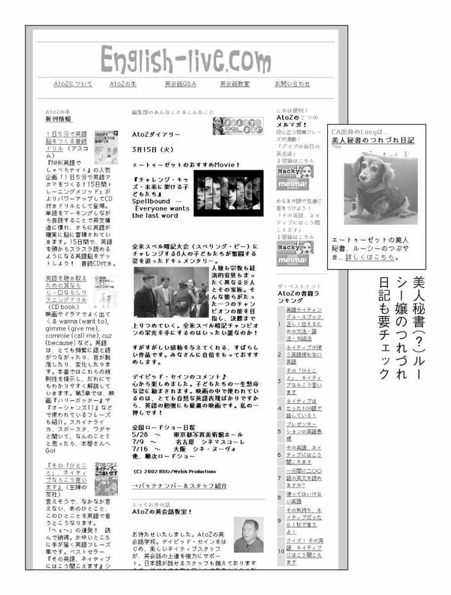

| その英語、ネイティブにはこう聞こえます３ | |
| David A. Thayne 小池信孝 | |
| (2005) | |
どうしてこんな展開に？
学校で習った英語や
何気なく使っている英語が、
ネイティブの耳に
こんな風に聞こえていた！
海外旅行に行って英語が通じなかったり、外国人に英語で話しかけてキョトンとされてしまったり......そうした苦い経験はだれでも一度や二度はあること。
「やっぱり発音がいけなかったのかな？」
今までそう思っていたあなたは、この本を読めばおのずと発音のまずさばかりが理由ではなかったと気づくでしょう。実は、あなたの言った英語自体が、ネイティブにはトンチンカンに聞こえていたり、つっけんどんに聞こえていたりしたかもしれないのです。
それは、あなたのせいではなく、あなたが持っている英会話集がまちがっていたからなのですが......。
この本は、そうした私たちが使ってしまいがちな英語をわかりやすく紹介し、ベストセラーとなっている『その英語、ネイティブにはこう聞こえます』の第３弾「海外旅行パーフェクト編」です。
海外旅行英会話については第１弾ですでに紹介していますが、読者からの「普通に日本で暮らす私たちにとって、英語が必要となるのはやはり海外旅行のとき。もっと海外旅行で役に立つ英語を知りたい！」という熱い要望におこたえしたものです。
また、「今度、語学留学に行くが、自分の英語力が心配になった。留学で使える英会話も知っておきたい」という多くの声を受け、ショートステイや短期留学までもカバーし、「パーフェクト」と冠するにふさわしい内容にしました。
第１章はシチュエーション別に分けて、海外旅行で使う英会話を紹介した「機内にて」「ホテル滞在」などのほか、一般的によく使われる表現を「とっさのひと言」「コミュニケーション」で紹介。
さらに、長期滞在やプチ留学にも使える英語を「ショートステイ」「短期留学」でたくさん取りあげています。
たとえば、ホストファミリーにお別れのあいさつで「とうとう日本に帰る日がきてしまいました」と言おうとして、
At last, I'm going back to Japan.
と言ったら、その場にいるネイティブの笑顔を凍りつかせてしまうことでしょう。それから、学校で先生に質問をしようとして、
Teacher, I have a question.
とクソ真面目な顔で言ったりしたら、笑われてしまうかもしれませんね。
第２章では、第１章で出てきた「頼みごとをするときの表現」や、私たちが混同しがちな「toとforの使い分け方」などのよく使う文法をわかりやすく解説しました。
「ちょっとロビーまでいいですか」のつもりで
Will you meet me in the lobby?
と言うと、言われた相手は妙なプレッシャーを感じるかもしれません。
あなたはShe read a book to me.とShe read a book for me.の意味の違いを、きちんと説明できますか。できないあなたは、さっそく読み進めて確認してみてください。
そして、第３章では恒例の「看板で見つけたヘンテコ英語」と「カタカナ英語」を紹介。中には、英会話スクールの張り紙にあったまちがい、なんていうものもあるから驚きです。
本書で紹介した英語はアメリカ英語です。表現やその説明が既刊と重なる点がありますが、これは文法や構文などが同じであるためです。また、既刊と同じ表現型式でもそのシチュエーションで必要な会話の場合や、日本人があいかわらず言いまちがえる言い回しについては、読者便宜のため本書でも掲載と解説を加えました。
さあ、ネイティブに負けずにどんどん英語をしゃべってみましょう。そして、あなたの海外旅行やショートステイが実りあるものになることを願ってやみません。
Success is never a destination ─ it is a journey.
「成功とは終着点ではなく、その旅路をいう」
Statenig St. Marie
（アメリカのノンフィクションライター）
その英語、ネイティブには
ヘンに聞こえています
●とっさのひと言
●機内にて
●エアポート
●タクシー・乗り物
●ホテル滞在
●お出かけ
●ショッピング
●レストランで
●ショートステイ
●短期留学
●コミュニケーション
ネイティブにもっともっと
近くなる テクニック
テクニック
●頼みごとをするときに
Will you～?は普通使わない
●人？ もの？
何を主語にするかで、意味が大違い
●いろんな""
ステップアップしよう
●""
自分の気持ちや状況にぴったりの表現を
●注文するときはスマートに。
レストランで使う英語表現
●簡単な頼みごとにDo you mind if～, please?は
大げさすぎてむしろ嫌み
●How can I ～?は
キレてやけくそになったときに使おう
●英語だからといって
何でもはっきり言えばいいってものではない
●真っ先に習ったハズのvery much。
ネイティブはあまり使わない
●日本語の表現と同じように
過去進行形を使うのはまちがいのもと
●「いくつかの」だけじゃない！
実はいろいろあるsomeの使い道①
●コーヒーや水にも使える！
実はいろいろあるsomeの使い道②
●両替の表現をいろいろ覚えて
ショッピングを思いのままに
●急いでいるときにsoonを使っても
「すぐに」実現しない
●I can speak Englishは、
ネガティブに聞こえる
●身ぶり手ぶりなし！
英語だけで外国人に道を教えられますか
●ネイティブは今どき使っていない！
時代遅れの言い回し
●I'm afraidを使いこなして
コミュニケーションの達人に！
●日本人には区別がつきにくい
前置詞 toとfor
日本発！看板で見つけた
ヘンテコ英語＆カタカナ英語
●看板で見つけたヘンテコ英語
●カタカナ英語
著者のホームページ
""
●装丁 犬塚勝一
●カバーイラスト 深川直美
●本文イラスト おのでらえいこ
●校正 東京出版サービスセンター
●編集・制作 主婦の友インフォス情報社
※本書の内容についてのお問い合わせは、主婦の友インフォス情報社企画出版部（電話03-3294-3616、担当＝三田村）までお願いいたします。アップトゥデートな情報に対応するため、インターネットのホームページにお知らせなどを掲載する場合があります。http://www.st-infos.co.jp/
【とっさのひと言】
どうして？
（理由をたずねて）
×Why not?
なんでよ？
理由をたずねるというよりは、反抗して「どうしてさ？」と言い返している感じ。
Why is that?
素直に疑問を口にしている感じがしてマル。
How come?
アメリカではこちらもよく使う。
【とっさのひと言】
どう思う？
×How do you feel?
お体の具合は？
これは「気分はいかがですか？」のニュアンスで、病人を見舞うときのひと言。Don't talk to me like I'm sick.（病人扱いしないでよ）なんてムッとされそう。
How do you feel about this?
後ろに about thisをつける。これで普通に意見をたずねる言い方に。
What do you think?
これで「いかがですか？」「どう思います？」と意見を求めるときの言い方になる。
【とっさのひと言】
何とおっしゃいました？
（聞き返して）
×What did you say?
今、なんつった？
相手の言葉にムッとして「なんだって？」と言い返しているような感じ。
What was it you said?
I'm sorry, what was that?
これらはネイティブがよく使う聞き返しの表現。I'm sorryを添えれば完璧。
【とっさのひと言】
ちょっと待ってくださいね。
×Wait for me for a minute, okay?
ちょっと待てったら。
最後のokayがくせもの。命令文の文末に okayをつけると、「つべこべ言わずに～してくれよ。な、おい」のような、偉そうで感じの悪いひと言になる。こんなその場の雰囲気を壊す発言はバツ。
Could you wait for a minute?
頼みごとの定番表現、Could you～?を使う。
【とっさのひと言】
これは何ですか。
×What's that?
なーにそれって？
いやなことを見聞きして顔をしかめながら言う感じ。とてもネガティブに響くのでバツ。ハリウッド映画をまねしないこと。
What could this be?
「これは何でしょうか」とていねいに聞こえる。
What is this?
こちらもマル。
【とっさのひと言】
そんなこと言ってません。
×I didn't say so.
そう思ったけど、口には出さなかった。
これは、口には出さなかった、と言っているだけ。ココロの中ではそう思っていたということが相手にはバレバレ。口は災いのもと。気をつけるべし。
I didn't say that.
soではなくthatを使う。こう伝えれば、余計な含みはなくなる。
【とっさのひと言】
静かにしていてくれる！
×Keep quiet.
秘密だよ！
keep quietは「秘密にして」「黙っていてね」の意。
Be quiet.
静かにさせたいなら、迷わずこちらで。
【とっさのひと言】
ちょっといいですか。
（人が邪魔で通れないとき）
×Would you mind?
じゃまだよ！ こら！
「このおれ様が通るのが見えないのか！」とでも言いたげな感じ。人間性を疑われるので、こんな横柄な言い方は避ける。
Would you mind letting me get by?
let me get byは「私を通らせる」という意味。これを添えれば横柄な印象はなくなる。
Excuse me.
これだけでもOK。
【とっさのひと言】
すみません、聞きとれませんでした。
×I'm sorry. I don't understand.
なにをわけのわからないこと言ってるのよ！
これではI don't understand why you said that.と言っているのと同じ。つまりI disagree!ということ。相手は何を話してもムダだと思い、会話はここで終わってしまう。
I'm sorry?
これだけで十分。こう言えば、相手は言ったことを繰り返してくれるはず。
【とっさのひと言】
ひとつ聞きたいのですが。
×I have one question for you.
そうまで言うなら、聞くけどさ......。
これは「じゃあ、聞くよ」「そうまで言うなら聞くけど」といったニュアンス。まるで、相手の嘘を暴こうとしているみたい。
I have a question.
シンプルにこれでOK。
Just a question...
「一点だけ......」と切り出す感じ。こちもネイティブがよく使う。
【とっさのひと言】
ちょっとお話があるのですが。
×I have something to say to you.
ひとこと言っておきたいんだけど！
sayは「文句を言う」というニュアンスで使われることが多い。これではケンカをふっかけているようなもの。
Do you have a minute?
Can I talk to you for a minute?
「ちょっといいですか？」。こう切り出すのがごく自然。
【とっさのひと言】
そうかもね。
×You would say that.
またバカなこと言って。
意外に難しいのがこの would の使い方。使う状況をまちがえると、こんな見当違いなひと言に。「君らしい発言だ」、転じて「またバカなこと言って」のニュアンス。
You might say that.
Maybe so.
I suppose so.
wouldではなくmightが正解。よく使うあいづちの言葉。
【とっさのひと言】
さあ、張り切っていこう！
×Let's hustle!
さあ急ごうぜ！
これでは Let's hurry. と言っているのと同じこと。
Let's go for it !
とても威勢のいい感じがしてマル。
【とっさのひと言】
ただいま電話に出られません。
×He can not answer the phone.
電話には出られないんだって言ってるでしょ！
can notを短縮せずに話すと、「できない」という部分が強調されすぎる。
He can't come to the phone right now.
普通に話すときには、can'tと短縮するのがネイティブ流。またcome to the phone（電話に出る）という表現もネイティブらしくておすすめ。
【とっさのひと言】
ちょっと苦手です。
（「英語できますか」と言われて）
×No, I don't.
英語はできん！
こんなつっけんどんな言い方は避ける。
No, not very well.
「英語はちょっと苦手で」「そんなにできないの」といったニュアンス。ネイティブがよく使う言い回しなので、このまま覚えよう。
Yes, but only a little.
「はい、でも少しだけ」という意味。
【とっさのひと言】
この席いいですか。
×Can I sit down here?
この席に腰を下ろして座ってもいいですか。
Can I sit down.や May I sit down.と言えばすむところを、hereまでつけて言うと、ネイティブの耳には妙に長たらしい文に聞こえて不自然。ネイティブならこうは言わない。
Can I sit here?
hereをつけるなら、downはつけずに sit hereという言い回しにする。これぞネイティブ流。
【とっさのひと言】
何を飲みますか。
×What do you want for a drink?
飲み物はいくら？
What do you want for～?は「～にはいくらの支払いを希望しますか」という意味。つまり、これでは飲み物の値段をたずねていることになってしまう。I'm not that stingy.（いくら私だってそんなにケチじゃないわよ）などとムッとされそう。
What would you like to drink?
飲み物の希望を聞くときの定番表現がこれ。食べたいものをたずねるときにもこの What would you like～?という言い回しが使える。
【とっさのひと言】
何を食べますか。
×What do you eat?
普段は何を食べていますか。
What do you～?という言い方をすると、習慣をたずねているように聞こえる。「いつもはどんな食べ物を食べていますか？」という意味。
What would you like to eat?
ていねいでネイティブらしいたずね方。「何か食べますか？」。
【機内にて】
枕をもう1つください。
×I need more pillow.
もっと厚みのある枕をください。
ネイティブは枕の高さが足りないときにこう言う。しがたって、これでは「もっと厚みのある枕をくれ」と言っているようなもの。機内でそれは無理な注文だろう。
Could I have another pillow?
Could I have～?（～をいただけますか？）という言い回しを使い、「枕をもう1つ」は another pillowとする。これで完璧。
【機内にて】
映画はやりますか。
×Can we see a movie today?
映画観たいよー！
「映画が観たい、観たい！」。これでは子どものおねだり。
Will there be a movie on this flight?
この場合、Will there be～?（～はやりますか）という言い回しがごく自然。
【機内にて】
食事のときに起こしてください。
×Wake me up for meals.
食事のときにはちゃんと起こせよ。
これでも通じるが、この命令口調はいただけない。ネイティブならもうひと言添えるはず。
Would you mind waking me up for meals?
こうすると、より低姿勢な言い方になる。こちらのほうが英語としても自然。
【機内にて】
映画がはじまったら起こしてください。
×I want you to wake me up when the movie starts.
映画のときは起こすのよ。いいわね。
I want you to～は、上の立場で指示を出すときの言い方。
Could I ask you to wake me up when the movie starts?
Maybe you could wake me up when the movie starts.
Could I ask you to～?（～をお願いしてもいいでしょうか）という言い回しがとてもていねいでおすすめ。感じよく頼みごとができる。
【機内にて】
頭痛薬をお願いします。
×Bring some headache medicine to me.
頭痛薬をおれ様に持ってこい！
bring ～ to me.は「～を持ってこい」のニュアンス。最後のto meが問題。ここが強調されて、かなりえらそうに聞こえてしまう。Bring me some headache medicine.なら問題なし。
Do you have anything for a headache?
Do you have anything for～?（～に効く薬はありますか）という言い回しが自然。とてもネイティブらしくておすすめ。
【機内にて】
薬を飲みたいので水をください。
×I have to take a medicine. Could you give me some water?
ある種類の薬を飲まなければならないのだ。水を恵んでいただけますか。
水を持ってきてもらえるのがあたりまえの状況で、Could you give me～?という言い回しはとても不自然。「～をお恵みください」とものごいでもしているみたい。
I need to take some medicine. Could I have some water?
Could I have～?を使う。
【機内にて】
読んでいる途中ですので。
（「この雑誌いいですか」と言われて）
×I'm reading it.
だめ！ 読んでるのよ。
なんだか叱られているように聞こえてしまう。言い方にもう一工夫ほしいところ。
I'm sorry, I'm reading it.
I'm sorryをつける。
I'm almost through.
「もうちょっとで読み終わりますから」
【機内にて】
はい、いいですよ。
（「通してもらっていいですか」と窓側の人に言われて）
×Yes, I would.
お願いされればそうするけど。
Would you～? の形で聞かれたからとしても、would の文で答える必要はない。これは、そうとう意地悪な答え方である。
Yes, of course.
とてもさわやかな感じがして好印象。
Sure, no problem.
こちらも紳士的な感じがしてマル。

【エアポート】
あれが私のスーツケースです。
×There is my suitcase.
私のスーツケースが見つかった！
There is～と言ってしまうと、探していたスーツケースがやっと見つかり、「ああ、あそこにあった！」と言っているみたい。
That's my suitcase.
「あれが私の～です」と言うときには、be動詞を短縮して That's my～.と言うのがごく自然。
【エアポート】
はい、そうです。
（「これはあなたのスーツケースですか」と聞かれ）
×Yes.
当たり前でしょう！
怒っているように聞こえてしまう可能性あり。
Yeah.
「はい、そうです」Yeah.はYes.をカジュアルに言ったものだが、こう答えるほうがずっと自然。
【エアポート】
アナウンスが聞こえません。
×I can't hear the announce.
発表は聞こえ......。
「アナウンス」はカタカナ英語。英語の announceは動詞で「知らせる」の意。これを無理やり名詞の位置で使うと、中途半端なところでセンテンスが終わる感じがする。
I can't hear the announcement.
「アナウンス」は announcement が正解。
I can't understand the announcement.
きちんと聞こえるけど、なにを言っているのかわからないときにはこの言い方。
【エアポート】
飛行機に乗り遅れてしまったのですが。
×I missed my plane.
飛行機に乗り遅れたというわけであります。
冷静に事実だけを述べている感じに聞こえてしまう。これではあまり困っているようには聞こえないかも。
I seem to have missed my plane.
seem to haveを加える。「～してしまったようなのですが」と、困りながら話す感じ。
【エアポート】
荷物が見つからないのですが。
×My baggage is missing.
荷物がなくなってしまったゾ！
これだと「なくなった！」「ない！」と言い切っていることに。断言するのはまだ早い。
My baggage seems to be missing.
seem toをつけると「～のようなのですが」というあいまいさが加わる。これは苦情を言うときや、相談ごとをするときによく使う。
【エアポート】
子どもがいるので、もう搭乗していいですか。
（空港の搭乗口で）
×Can I get on now? I'm with child.
妊娠しているので、もう搭乗していいですか。
with childと言うと「妊娠している」という意味に聞こえる。
Can I get on now? I have a child with me.
aをお忘れなく。複数なら、I have children with me.となる。
【エアポート】
パスポートをなくしてしまいました。
（空港の搭乗口で）
×I have lost my passport.
発表いたします。パスポートを紛失したなり！
I have～は日常会話では短縮してI'veとするのが普通。これを短縮せずに話すと妙に大げさで、なんだか新聞の記事でも読んでいるみたいに聞こえる。
I lost my passport.
シンプルにこれでOK。もしくは I've lost my passport.と短縮すれば問題なし。
【エアポート】
いいえ、違いますが。
（「これはあなたの搭乗券ですか」と言われて）
×No, it's not.
違う！ 絶対に違う！
むきになって否定している感じ。なんだか怪しい。
No, I don't think so.
Nope, it's not mine.
Nope.（ノゥップ）はNo.を陽気にした言い方。とてもフレンドリーに聞こえるのでお試しあれ。
【エアポート】
搭乗の開始時間は何時ですか。
×What is boarding time?
ボーディングタイムってなに？
What is ～?は言葉の意味をたずねるときの言い回しで「～ってなんですか？」の意。That's the time you need to get on the plane.（機内に乗り込む時間のことですよ）なんて親切に教えてくれるかも。
What's the boarding time?
ここの冠詞は the。What's the ～ time?は決められた時間をたずねるときによく使う言い回し。What's the arrival time?（到着時間は何時ですか？）、What's the starting time?（開始時間は何時ですか？）などと使える。
【エアポート】
何時までに搭乗すればいいのですか。
×Until what time do I need to board?
いつまで飛行機の中で待っていなければならないの？
untilはある状態を継続するときに使う。「何時まで中で待ち続けなければならないの？」のニュアンス。
By what time do I need to board?
「何時までに～？」とタイムリミットをたずねるなら、byを使ってBy what time～?という言い方がベスト。
【エアポート】
自分で探します。
（「ホテル探しを手伝いましょうか？」と言われて）
×I'll find out myself.
おのずとわかることでしょう。
find outは努力して見つけるのではなく「自然にわかる」という意味で使う。したがって、このような状況では使えない。
I'll find my way.
「自力で」ならばこう言う。
このレストラン知ってますか。
×You know this restaurant, don't you?
隠したってダメよ。このレストランのこと知ってるんでしょ。
語尾を上げずにフラットに言ってしまうと、刑事の尋問のようになってしまうので注意。
Do you know where this restaurant is?
この場合、Do you know where ～ is?（～はどこだかわかりますか？）とたずねるのがごく自然。
I'd like to go to this restaurant.
I'd like to～（～したいのですが）という言い回しを使ってもOK。
【タクシー・乗り物】
そこを左に曲がってください。
（タクシーで）
×Turn to the left.
左向け、左。
turn to the leftと言ってしまうと、「左の方向を向け」のニュアンスになり、使う状況が変わってくる。このような、不要な toを入れてしまうまちがいがけっこう多いので気をつけよう。
Turn left there.
ネイティブならシンプルにこう言うはず。toは不要。
【タクシー・乗り物】
8時までにレストランに着きたいんです。
（タクシーで）
×We must get to the restaurant by 8:00.
なんとしても8時までにレストランに到着せねばなりませぬ。
この程度のことで mustという助動詞を使うのは、かなり大げさに聞こえて不自然。まさに「～をせねばならない」「～をする義務があるのだ」とでも言っているみたい。
We need to get to the restaurant by 8:00.
need toを使った言い回しがごく自然。
【タクシー・乗り物】
タクシーの運転は長いのですか。
（運転ぶりに感心して）
×How long have you been driving a taxi?
タクシーの運転を始めてどれくらい？
ネイティブなら、明らかに経験豊富とわかる人相手にこうは聞かない。
Have you been driving a taxi for long?
こう言えばOK。
【タクシー・乗り物】
道が違うようです。
（タクシーで）
×This is the wrong way.
道が違うじゃないか！
まるで「遠回りする気か！」とでも言いたげな感じ。
Are you sure this is the right way?
とりあえず、まずはこれくらいソフトに言っておきたい。「この道でまちがいありませんか」
【タクシー・乗り物】
1ドル札は持っていません。
（タクシーで）
×I don't have any one.
恋人は1人もいないよ。
1ドル札のことを略してonesと言うことがあるが、単数でoneと言ってしまうと、ネイティブの耳には anyone に聞こえるのでよろしくない。つまり、これでは I don't have anyone special.（特につき合っている人はいません）と言っているのと同じこと。そんなことを運転手に打ちあけてどうする......。
I don't have any ones.
複数のsをつけてonesとするだけで問題解決。こう伝えれば1ドル札のことを話しているのだとわかる。
【タクシー・乗り物】
バスはどこで乗れますか。
×Where can I take a bus?
どこまでバスで行けますか。
つい takeという動詞を使ってしまいそうだが、ネイティブが「バスをつかまえる」と言うときに take a busと言うことはない。これだと「どこまでバスで行けるのか？」という意味になる。
Where can I get on a bus?
「バスに乗れる」と言うときの動詞は get on がネイティブらしくて自然。
【タクシー・乗り物】
観光バスはありますか。
×Do you have any sightseeing buses?
あなたは自家用観光バスを所有していますか。
バスの場合、ネイティブはDo you have any～?という聞き方はしない。これだと、相手に個人的に所有しているかどうかをたずねているみたい。
Are there any sightseeing buses?
Are there any～?という言い回しを使うと、とても自然なたずね方になる。
【タクシー・乗り物】
動物園へ行くのにバスの乗り換えはありますか。
×Do I have to change buses to go to the zoo?
どうしても乗り換えしないとだめ？ やだよー。
ここでhave toを使ってしまうと「～しなければならないの？」という、イヤイヤ感丸出しの感じになってしまうので注意。
Do I need to change buses to go to the zoo?
have toではなくneed toを使う。日常会話で普通に必要性をたずねるときには、need toを使うと自然に聞こえることが多い。
【タクシー・乗り物】
すみません、降ります。
（バスで）
×Excuse me. Get me off!
私を外に運び出して！
自力で出られない人が使うならOK。たとえば、乗車中に具合が悪くなり、一歩も歩けなくなってしまったときなど。
Excuse me. I need to get off.
need toを使うと自然な言い回しになる。
Excuse me. I'd like to get off.
I'd like toでていねいに。
【タクシー・乗り物】
電車が遅れるということですね。
（駅で電車の発車時刻変更を知らされて）
×Are you saying the train is going to be late?
ちょっと、ちょっと！ まさか電車が遅れるってことか。
Are you saying ～?は「まさか～ってことなのか?!」というニュアンス。必要以上に動揺している感じで不自然。
Did you say the train is going to be late?
再確認するだけなら、こちらの言い方で。
【タクシー・乗り物】
満タンにしてください。
（ガソリンスタンドで）
×Please fill up a tank.
どこかのタンクを満タンに。
a tankと言うと、「どれでもいいから1つのタンク」という意味になり、ガソリンを入れるタンクを限定していないことになってしまう。
Could you fill up the tank?
aではなくtheが正解。この1語で意味合いがガラリと変わる。
Fill'er up.
Fill her up の略。her は車のこと。
【ホテル滞在】
朝6時に荷物をとりに来てください。
×I want you to come get my luggage at 6:00.
6時に荷物をとりに来るんだぞ。
I want you to～は、明らかな命令口調。頼みごとをしているようには聞こえない。
I'd like to ask you to come get my luggage at 6:00.
I'd like to ask you to～（～をお願いしたいのですが）という表現がていねいでおすすめ。
【ホテル滞在】
荷物がたくさんあります。
×I have a lot of baggage.
私って、悩みが多いのよ。
have a lot of baggageは「悩みが多い」という意味で、ネイティブがよく使うイディオム。
I have a lot of suitcases.
I have a lot of bags.
この場合は、suitcasesやbagsなどと具体的に言うのがベター。
【ホテル滞在】
ドアを開けてもらえますか。
×Could you just open the door?
つべこべ言わずに黙ってドアを開けろ！
「ドアをただ開けてもらうだけでいいので......」と言うつもりで、just という単語を使ってしまったらたいへん。これでは「つべこべ言わずにとっととドアを開けてよ」と偉そうに命令しているみたい。
Could you open the door?
justは不要。
【ホテル滞在】
荷物を運んでもらえますか。
×I want you to carry my bags.
私の荷物をお運び！
I want you to～は威圧的な命令口調。偉そうに聞こえてとても感じ悪い。いくら客でも礼儀はわきまえたい。
Could I ask you to carry my bags?
Could I ask you to～?（～をお願いしてもいいかしら？）という言い回しを使えばスマートに頼める。
【ホテル滞在】
はいどうぞ。
（チップを渡しながら）
×This is for you.
はい、あなたにプレゼントよ。
おみやげやプレゼントを手渡すときに使う表現。チップを渡すときにこう言うと、妙に恩着せがましく聞こえて不自然。
Thank you.
やはりこれが一番自然。
Here you go.
なにかを手渡しながら言う定番表現。「はいどうぞ」。
【ホテル滞在】
彼にチップを渡しました。
×I gave him some tip.
ものすごい額のチップを渡した。
このsome は「ものすごい額の～」の意。
I gave him a tip.
通常の額のチップなら、some などと言わずに、a tipと言う。
【ホテル滞在】
お願いします。
（「オーシャンビューの部屋をご用意できます」と言われて）
×Please do so.
そうしてちょうだい。当たり前でしょ。
「当然よ」とでも言いたげな言い方。お高くとまっているように聞こえて感じ悪い。
That would be nice.
「うわ～っ、うれしいです」。こうして喜んでもらえると、フロント係もサービスのし甲斐があるというもの。
【ホテル滞在】
どちらでもいいです。
（「ベッドはシングルとダブルのどちらがいいですか」と聞かれて）
×I don't care.
どうだっていいよ。
客とはいえ、こんななげやりな言い方は避ける。良識ある大人ならこうは言わない。
It doesn't matter.
「どちらでも大丈夫です」。こう答えれば、なげやりな感じにはならない。「私はどちらでも結構ですよ」というニュアンス、大人の余裕が感じられる言い回し。
【ホテル滞在】
お湯を持って来てください。
（フロントにお茶を入れるためのお湯を頼んで）
×I need hot water.
シャワーが壊れてます。
ネイティブがこう聞くと、シャワーの故障のことだと勘違いしてしまう可能性大。I'll have someone repair it right away. （すぐに修理の者を行かせます）などと言われてポカンとしないように。
I need hot water for coffee/tea.
なにに使うのかを伝える。これで完璧。
【ホテル滞在】
どれくらいかかりますか。
（ルームサービスの待ち時間をたずねて）
×How long will it take?
正確な所用時間を教えてください。
こうたずねられると、相手は秒単位まで正確な所用時間を答えなければならないとプレッシャーを感じてしまう。I don't know for sure.（正確にはお答えしかねますが......）などと口ごもられそう。
About how long will it take?
だいたいの所用時間をたずねるなら、文頭に aboutをつけてたずねるのが普通。
【ホテル滞在】
バスローブが足りません。
×There isn't a bathrobe.
バスローブが1着もない！
There isn't a single bathrobe.と言っているのと同じこと。つまり「1着もない」ということ。
There's a bathrobe missing.
There's a ～ missing.と言えば、「～が1つ足りません」という意味の言い回しに。知っておくと便利なので覚えておこう。
【ホテル滞在】
部屋の掃除をお願いします。
×Will you clean my room?
きっと部屋を掃除すると約束してくれますね？
Will you～? は、なんとか約束をとりつけようとするときによく使う言い回し。「～してくれますよね。約束してくれますね」といったニュアンス。ホテルのメイドに向かってこんな言い方をしたら、Of course. That's my job.（もちろんです。仕事ですから）なんてムッとされそう。詳しくは『頼みごとをするときにWill you～?は普通使わない』を参考に。
Would you clean my room?
Would you～?と言うのが自然。
【ホテル滞在】
トイレが詰まってしまったんです。
×The toilet is clogged.
トイレが詰まったじゃないか！ 管理悪いぞ。
一方的にクレームをつけている感じ。本当に自分に非はないのか。
It seems that the toilet is clogged.
It seems that～（～のようなのですが）を文頭につけると、いくぶん穏やかな感じになる。同じクレームを言うにしても、これぐらいのココロの余裕はもっていたい。
【ホテル滞在】
クリーニングが終わったら部屋の前に置いておいてください。
×Please leave the laundries at my door.
クリーニング屋を部屋の前に置いておいてください。
the laundriesと複数で言ってしまうと、「洗濯物」ではなく「クリーニング屋」を意味してしまう。クリーニング屋は持ち運べない。
Please leave my laundry at my door.
単数で my laundryとする。
【ホテル滞在】
コンピュータはありますか。
×I need to use computer.
コンピュータという商品が必要だ。
aをつけずに use computerと言うと、computerが商品名のように聞こえてしまう。aや the の違いで、ニュアンス、意味が違ってしまうことがあるので要注意。
I need to use a computer.
【ホテル滞在】
気分が悪いので、医者を呼んでください。
×I feel sick. Could you call me doctor?
気分が悪いの。私をドクターって呼んで。
Could you call me～?は「私を～と呼んでもらえますか？」という意味。第1巻で強調したが、あいかわらず日本人はこのようにまちがう。
I feel sick. Could you call me a doctor?
この aが重要。お忘れなく。医者を呼ぶときもcallでOK。
【ホテル滞在】
このあたりで面白いところはありますか。
（コンシェルジュに）
×Is there anything to do around here?
こんな場所でやることなんてあるの？
楽しいことなどあるはずがないと決めつけているような言い方。
Do you have a suggestion for something to do?
この前に、I have some free time.（少し時間があるのですが）とつけ加えればさらにマル。
Where's the most interesting place to go around here?
「このあたりではどこが1番おもしろいですか」という意味。
【ホテル滞在】
レストランの予約をお願いできますか。
（コンシェルジュに）
×I want you to make restaurant reservations for me.
レストランの予約を入れろよ。
この状況でI want you to～という言い回しは避けるべき。これは「～しなさい」「お前は～をするんだ」といった、とてもごう慢なニュアンスにも聞こえてしまう言い回し。常識ある大人はこうは言わない。
Do you think you could make restaurant reservations for me?
Do you think you could～?（～をお願いできますか？）という言い回し。落ち着いた感じでおすすめ。
【ホテル滞在】
その旅行社は高くないですか。
（コンシェルジュに）
×Is that a reasonable travel agent?
その旅行社は道理をわきまえていますか。
これでは、そこがまっとうな店かどうかをたずねているように聞こえてしまう。reasonableの使い方に注意。
Are the prices at that travel agent reasonable?
price（値段）という単語とセットで使えば、reasonableを「値段が手ごろな」「あまり高くない」という意味で使える。
【ホテル滞在】
早く予約を取りたいのですが。
（コンシェルジュに）
×I'd like a reservation soon.
そのうちに予約を取りたい。
soonは「そのうちに」「近いうちに」というニュアンスで使うことが多い。これではあまり急いでいるようには聞こえない。
I'd like a reservation as soon as possible.
至急でお願いするなら、as soon as possible。
【ホテル滞在】
1人でツアーに参加できますか。
×Can I go to the tour alone?
1人でツアーまで行ってもいいですか？
tourが場所のように聞こえてしまって不自然。
Can I go on the tour alone?
go on the tour（ツアーに参加する）という言い回しを覚えておこう。前置詞はon。
【ホテル滞在】
日本語のわかる人はいますか。
×Japanese speaker, please.
日本語をしゃべれる人を呼びな！
pleaseをつければなんでもていねいになると思ったら大まちがい。使いどころをまちがえると、こんな横柄なひと言になってしまう。
Does anyone speak Japanese here?
こう聞けば問題ない。
【ホテル滞在】
私あてにメッセージはありますか。
×Is there any message for me?
私に伝言が1つもないですか。本当に？
「1つでもいいからないか」のニュアンス。妙に必死に聞こえて不自然。伝言がないと困る理由でもあるのか。
Are there any messages for me?
Are there any ～s...?と複数でたずねるのがごく自然。
【ホテル滞在】
国際電話のかけ方を教えてください。
×How can I make an overseas call?
国際電話をどうやってかけるっていうのよ！ 無理よ！
How can I～?は、少々やけくそ気味に聞こえる言い回し。Please calm down.（お客さま、落ち着いてください）なんてなだめられそう。詳しくは『How can I ～?はキレてやけくそになったときに使おう』参照。
How do you make an overseas call?
How do you～?という言い回しを使うのがごく自然。
【ホテル滞在】
いいえ。
（「今日チェックアウトですか」と聞かれて）
×No.
ちがうよ！ ちがうってば！
むきになって否定しているように聞こえる......。
Nope.
Nope.はNo.をカジュアルに言ったもの。とてもフレンドリーに響くので、ホテルスタッフとの雑談など、明るい雰囲気の中で使うのにぴったり。「ノゥップ」と発音。そのほかの""""』を参照。
【ホテル滞在】
フロントで会いましょう。
×I'll meet you at the reception.
パーティで会いましょう。
receptionだけだと、披露宴や歓迎会などといったパーティのことを言っているのかと勘違いされそう。What party?（え、どのパーティ？）なんてキョトンとされちゃうかも。
I'll meet you at the reception desk.
フロントは reception desk。
【ホテル滞在】
どっちも盗んでいません。
（ホテルの部屋からランプが2つなくなったことを疑われて）
×I didn't steal both of them.
1つしか盗んでないよ。
「両方は盗んでいない」と言っているように聞こえる。つまり、1つは盗んだ、ということ。これでは、通報されても文句は言えない。
I didn't steal either of them.
「どちらも盗んでいない」と言いたいなら、either of themが正解。
【ホテル滞在】
この料金は使った覚えがありません。
×I don't know this charge.
この料金は知り合いではありません。
I don't know～は「～は知り合いではない」という意味で使うのが普通。たとえば、I don't know John Smith.（ジョン・スミスは知り合いではありません）などと使う。
I don't know what this charge is for.
I don't know what ～is for.（～がなんなのかわかりません）という言い回しを覚えておこう。
【お出かけ】
町の地図をください。
×Please give me the map of the city.
その1つしかない町の地図をください。
the map of the cityと言うと、その地図はこの世に1つしかないことになってしまう。そんな貴重な地図は、簡単にはあげられない。
Could I have a map of the city?
この場合 mapにつける冠詞は theではなく aが正解。
【お出かけ】
見に行きましょう。
×Let's go and see.
確認してみよう。
これだと「確認してみよう」という意味になり、単に「見に行く」と言うのとはニュアンスが少し違ってしまう。
Let's go and see it.
最後にitをつける。これで「見に行ってみよう」の意に。この1語があるのとないのとでは大違い。
【お出かけ】
図書館はどこにありますか。
×Where is the library?
図書館ってどこなのさ？
友だちや家族ならまだしも、見知らぬ人に向かって使うには失礼。
Could you tell me where the library is?
文頭にCould you tell me～をつける。できるだけていねいな言葉づかいを心がけよう。Would you know where the library is? でもOK。
【お出かけ】
動物園に行ってみない？
×How about go to the zoo today?
ええと、これどう？ 動物園に行け！
How aboutとGo to the zoo today が別々の文のように聞こえてしまう。
How about going to the zoo today?
How about の後ろの動詞は ing 形にする。「～してみるっていうのはどう？」「～をしてみない？」と軽くたずねるひと言。
【お出かけ】
ピクニックに行ってきます。
×We are going to a picnic.
『ピクニック』を観に行ってきます。
to a picnicという部分が問題。これは go to a movie（映画を観に行く）などと言うときに使う言い回し。これでは「参加する」というニュアンスは伝わらない。『ピクニック』という名画、ありましたね。
We are going on a picnic.
on a picnic が決まり文句。これでピクニックに参加することを意味する。
【お出かけ】
郵便局はどこですか。
×Please show me where the post office is.
郵便局まで連れて行って！
Please show me where the ～ is. は、目的地まで案内してもらうときの言い方。ずうずうしい人だと思われてしまうかも。
Could you tell me how to get to the post office?
Could you tell me how to get to～? で「～はどこですか？」とたずねるときの自然な言い方になる。『駅はどっちですか。』ですでに述べたが、これぞネイティブ流。
【お出かけ】
映画館に行きました。
×I went to a theater.
劇場に行きました。
theaterは「劇場」。映画はやっていない。
I went to a movie.
go to a movieを決まり文句として覚えてしまおう。
【お出かけ】
ビーチへはどう行けばいいのですか。
×How am I able to go to the beach?
ビーチになんて行けるはずがないじゃないの。
How am I able to～?は「私に～なんてできるはずがないでしょ！」というニュアンス。ケンカごしに反論する感じ。How can I ～? でも同じニュアンスになる。
How do you get to the beach from here?
How do you ～?を使う。これで余計な含みはなくなる。goではなくgetを使うところもポイント。
【お出かけ】
テニスコートの予約をしたいのですが。
×I'd love to reserve a tennis court.
予約ができたらチョーうれしい！
テニスぐらいのことで大げさな......。
I'd like to reserve a tennis court.
おなじみの言い回し I'd like to～を使う。
【お出かけ】
博物館へ行きたいのですが。
×I want to go to museum.
博物館という場所に行きたいんだよ～。
冠詞をつけずに go to museumと言うと、museumが地名かなにかのように聞こえてしまう。たとえば、I want to go to New York.（ニューヨークへ行きたい）。
I'd like to go to the museum.
theをお忘れなく。
【お出かけ】
歩いて行けますか。
×Can I take a walk from here?
このあたりから散歩できますか。
take a walkは「散歩する」の意。
Can I walk from here?
walkだけでOK。「そこまで歩いて行けますか」の意。
【お出かけ】
地元の者ではないので、わかりません。
（道を聞かれて）
×I don't know. I don't live here.
さあね。こんなところに住んでないから。
I don't know.だけだと、少々ぶっきらぼうに聞こえてしまうおそれあり。できれば、もうひと言つけ加えておきたい。
I'm sorry. I'm not from around here.
ここでI'm sorry.をつけ加えるとグッとていねいに。
【お出かけ】
お財布をとられた！
×My purse was taken.
財布の紛失に遭いました。
なんだか、淡々と事実だけを述べている感じ。妙に冷静で不自然。
Someone stole my purse!
主語をsomeoneに、そしてsteal（盗む）という単語を使うのがポイント。とても緊迫感が出る。『バッグが盗まれました！』、『人？ もの？ 何を主語にするかで、意味が大違い』も参照のこと。
【お出かけ】
そろそろおいとまします。
×I'm leaving.
もう帰る！
怒って帰ろうとしているみたい。いきなりこう言われたら、相手はなにごとかと思ってしまう。
I'd better be going now.
「そろそろ行かなければ......」と切り出す感じ。
I guess I'll be leaving.
義理堅い感じがして好印象。
【お出かけ】
よかった、おもしろかった。
（「博物館はどうだった？」と聞かれて）
×It was interesting.
まあいいと思うよ。
あまり楽しそうには聞こえない。本当に楽しかったのなら、これにもうひと言添える。
It was really interesting.
reallyをつけてreally interestingと言えば、より心のこもった言い方に。これが遊園地やパーティなら、interestingではなくfunを使うとぴったりくる。
【お出かけ】
もうトイレが我慢できない！
×I'm dying to go to the toilet!
便所に行くのが楽しみ、楽しみ♪
dying toは確かに「とても～がしたい」という意味だが、これは楽しいことについて使う言い回し。たとえば、I'm dying to go to Disneyland.（すっごくディズニーランドに行きたいの！）と使う。
I've gotta go to the bathroom. I can't hold it.
gottaはgot toの短縮形。日常会話でネイティブがよく使う言い回し。haveを省略してI gotta go to the bathroom.と言ってもOK。
【お出かけ】
映画観てて泣いちゃった。
×I was crying during the movie.
映画の最中、あのことで泣きっぱなし！
過去進行形で話すと、なにか映画以外の理由で泣いていたような感じになる。たとえば、I was crying during the movie because my boyfriend left me.（彼氏にふられて映画の間中ずっと泣いてたの）などと使うのが普通。
I cried during the movie.
ちょっとだけ泣いたのなら、単純な過去形で。
【お出かけ】
すごくよかった。
（「映画は楽しかった？」と聞かれて）
×It was nice.
まあまあ。
「まあまあ」「まあいいんじゃない」といったニュアンスで、あまりほめているようには聞こえない。ネイティブなら、この状況でniceを使うことはまずない。
It was great.
greatを使うと感動がよく伝わる。
【ショッピング】
アイシャドウを見せてください。
×Could I see eye shadows?
目の影を見せて。
「目の影」っていったいどんな影なのか......。
Could I see the eye shadows?
化粧品の「アイシャドウ」を見せてほしいなら、冠詞の theをお忘れなく。
【ショッピング】
シャネルはどこにありますか。
×Where is Chanel's boutique?
シャネルさんのブティックはどこですか。
Where is ～'s boutique?と言うと、Chanelが、ブランド名ではなく人の名前に聞こえてしまう。「シャネルさんの店」のニュアンスになってしまって不自然。これは日本人が陥りやすいまちがい。
Where is the Chanel boutique?
「シャネルのショップ」ならChanel boutiqueと言うのが普通。
【ショッピング】
スカーフは何階にありますか。
×Which floor has scarves?
どの階がスカーフを持っていますか。
つい have（has）という単語を使ってしまいそうだが、ネイティブならこのような言い回しはしない。これでは、そのままの意味にしかならない。
What floor are the scarves on?
What floor is（are）～ on?（～は何階ですか）という言い回しを覚えておこう。
【ショッピング】
タバコを2箱ください。
×I'd like two cigarettes.
タバコを2本ください。
two cigarettesは「タバコ2本」の意。今どき、タバコをバラ売りしている所などない。
I'd like two packs of cigarettes.
「タバコ2箱」は two packs of cigarettes。
【ショッピング】
エビを3尾ください。
（スーパーの鮮魚売り場で）
×Can I have three shrimps?
どれでもいいからエビを3尾ちょうだい。
一見すると問題なさげだが、この状況で使うには、微妙に不自然。これだと、エビならどれでもいい、と言っているようにも聞こえる。ネイティブなら、もう少し具体的な注文の仕方をするはず。
Can I have three of those shrimps?
ほしいものを指差して注文するなら、この言い回しがごく自然。
【ショッピング】
風邪薬がほしいのですが。
×I need cold medicine.
風邪薬をまとめ買いしたい。
大量に買い込もうとしているかのような言い方。商売でもはじめる気か。
I need some cold medicine.
someをつけると、一転して量が限定され、自分が服用するためのものだとわかる。
【ショッピング】
メモ帳はありますか。
×Do you have a writing pad?
あなた、メモ帳所持してる？
これだと、個人的に所有しているかどうかをたずねる言い方になってしまう。ショッピングのとき日本人が一番まちがいやすい例。
Do you have any writing pads?
店でたずねるなら、Do you have any ～s?という言い回しがごく自然。定番表現なので覚えてしまおう。
【ショッピング】
いいえ、別に。
（「何かお探しですか」と聞かれて）
×No.
なっ何も探してないよ！
Then, why are you here?（なら、なぜ来た?!）なんて逆ギレされたりして。
No, I'm okay.
「いいえ、別に」「いいえ、だいじょうぶです」といったニュアンス。こう伝えれば、店員さんも笑顔でその場を離れるはず。
No, nothing particular.
particularは「特定の」の意。直訳すると「いいえ、特定のものはなにもありません」、転じて「いいえ、特に」のニュアンス。
【ショッピング】
さわってもいいですか。
×Can I touch this?
いじってみてもいいですか。
なじみのある単語なのでつい touchを使ってしまいがちだが、これでは「いじらせて」と言っているように聞こえて不自然。素材の感触でもじっくり確かめるつもりなのか。
Is it okay if I look at it?
手にとって見たいときによく使うのがこれ。
Can I see it?
これでもOK。「見てもいいですか」が直訳だが、実際には「（手にとって）見てもいいですか」のニュアンス。
Can I hold it?
こちらもよく使う。
【ショッピング】
見せてもらってもいいですか。
（アクセサリー売り場で「18金です」と言われて）
×Could you show me?
証明できますか。
これでは Could you show me that it's 18 karat gold?（それが18金だということを証明してください）と言っているのと同じこと。一流店でこんなことを口走ったら赤っ恥。
Could you let me look at it?
Do you mind if I look at it?
「（ショーケースから出して）見せてもらっていいですか？」のニュアンス。この状況で使うならこれがベスト。
【ショッピング】
肩幅が広いのね。
×You have a big shoulder.
肩の片方だけなんだか大きいね。
いったいどんな体型なのか。どちらにしても、ほめていることにはならないのでご注意を。
You have big shoulders.
肩は両肩あるので複数に。
【ショッピング】
気に入ったわ。
×I like it.
まあまあね。
言い方にもよるが、本心からそう言っているようには聞こえないかも。
I do like it.
I really like it.
doやreallyを入れるだけで、グッと心がこもる。
【ショッピング】
これは好みじゃないです。
（すすめられた商品を断わって）
×I don't like this.
これ、きらーい！
まるで好ききらいの激しい子どもがわがままを言っているみたい。大の大人が使うとヒンシュクもの。
I don't care much for this.
care forは「～がほしい」「～を好む」の意。I don't care much for this.で「これはあまりほしくないです」「あまり好きでないので」といった、ソフトな断りのひと言に。相手への思いやりも感じられてマル。
【ショッピング】
もう少し安くなりませんか。
×Could you give me a more reasonable price?
もっと常識的な値段にして。
reasonableをまちがって使っている人が意外と多い。これでは「この値段は reasonable（正当な値段）ではない」と文句を言っているようなもの。reasonableが使えるのは、That's reasonable．（その値段なら文句はないです）などと言うとき。
Could you give me a little better price?
こう言えば品よく値段の交渉ができる。
【ショッピング】
まちがっているのでは？
（ショッピングで釣り銭が足りなくて）
×You made a mistake.
あんた、まちがってるわよ！
一方的すぎる。相手も故意にまちがえたわけではないのだから、言い方には気をつけたい。
This doesn't seem right.
「これはまちがっているようですが」という意味。できればこれくらいソフトに指摘したい。
【ショッピング】
また来ます。
×I'll try some other time, I think.
またにしようかな、どうしようかな......。
このようにI thinkを文末に置くと、とてもあいまいな印象になってしまう。
I think I'll try some other time.
文頭に置くなら問題なし。「またにします」「また今度来ますね」とさりげなく伝えるひと言に。
【ショッピング】
店は何時からですか。
×What is your open time?
いつなら暇？
店の営業時間ではなく、相手の暇な時間をたずねているみたい。ナンパでもする気か。
What time do you open?
英語では「何時に店を開けるのですか」とたずねる。
What are your (business) hours?
この hoursは「営業時間」の意。
【ショッピング】
営業時間を教えてください。
×What is your business hour?
営業している1時間はいつですか。
営業時間が1日に1時間しかない店のように聞こえる。いったいどんな商売なのか。
What are your (business) hours?
複数でたずねるのがごく自然。
【ショッピング】
買い物に行きました。
×I went to shopping.
「ショッピング」と言われる場所に行きました。
I went to（I go to）の後ろには場所（地名）がくる。
I went shopping.
toは不要。
【ショッピング】
ドルを円で6万円分ください。
×May I have US dollar for 60,000 yen.
6万円を1ドルと換えてください。
「1ドル」の意になってしまうので、dollarを単数にしてしまわないように。たとえば、Can I have dollar?（1ドルください）といった具合。
I'd like 60,000 yen in dollars.
I'd like ～ yen in dollars.（～円をドルにしたい）という言い回しを使うと、すっきりと伝えられる。
【ショッピング】
特に希望はないです。（おまかせします）
（両替所で「お札はどのようになさいますか」と聞かれて）
×I'll leave it for you.
あなたにあげます。
「おまかせします」と言うつもりなら、前置詞がバツ。これでは「お金はあなたにおいて行きます」の意になってしまう。
I'll leave it to you.
これで「おまかせします」の意に。前置詞はforではなくtoが正解。前置詞1つでこれだけ意味が違ってしまうので注意。
I'll leave it up to you.
leave it up to～（～の判断にまかせる）という表現も覚えておこう。
【ショッピング】
小額紙幣に両替してください。
×Can you break this into small money?
このお札を破いて小さくして。
「お金を両替する」と言いたいときに、break intoという言い回しを使うと意味が違ってしまうので注意。お金を破くとはバチ当たりな。
Can you give me small bills?
シンプルに give me small billsと言えばOK。
【ショッピング】
トラベラーズチェックを現金にしてください。
×Cash a traveler's check, please.
どれでもいいからトラベラーズチェックを現金にして！
aが問題。Cash a traveler's check.だと「どれでもいいからトラベラーズチェックを1枚キャッシュにしてくれ」という、ヘンテコな文になる。まるで、たくさんある中から、相手に好きなものを1枚選ばせているみたい。
Could you cash this for me?
シンプルにこれでOK。
【レストランで】
ここはどんなレストランですか。
×What kind of a restaurant is this?
とんでもないレストランだな！
What kind of ～ is this?という言い回しは、怒っているように聞こえてしまうおそれがあるので要注意。たとえば、上司が部下にWhat kind of report is this?（こんなものがレポートといえるか?!）というふうに使われる。
What type of restaurant is this?
What type of food do you serve?
kindをtypeにかえるだけで、ずいぶんとニュアンスが和らぐ。
【レストランで】
はい、そうしましょう。
（「ディナーをご一緒しませんか」と言われて）
×Yes, I would like to.
行きたいのですが......、だめなんです。
Would you like to join us for dinner?（ディナーをご一緒しませんか）と言われて、こう答えると、実は、どちらかというと断りを入れたいときに使うことが多い言い回しになってしまう。「行きたいのはやまやまなんですが......」と言葉を濁す感じ。
Yes, I'd love to.
とても喜んで応じる感じ。
【レストランで】
予約をキャンセルしたいのですが。
×Can you cancel the reservations?
予約をキャンセルすることも可能ですか。
これはキャンセルが可能かどうかをたずねる言い方なので、これだけではキャンセルを頼んでいることにはならない。
Could you cancel the reservations?
I'd like to cancel the reservations.
Would you～?でも同じニュアンス。どちらでもOK。
【レストランで】
クロークはありますか。
×Is there a cloak?
マントはありますか？
「クローク」だけでは通じない。英語でcloakは「マント」の意。
Is there a cloakroom?
ホテルやレストランの「クローク」は英語ではcloakroom。
【レストランで】
待ちますか。
（満席のレストランの入り口で）
×Do I have to wait?
待つの～？
とてもイヤそうに聞こえて大人げない。
Do I need to wait?
Do I need to～?（～しなければなりませんか？）という言い回しがベスト。
【レストランで】
まだ決まってません。
×We're not ready.
早いよ！
まるで注文をとりにきた相手を、「こんなに早く注文をとりにくるな」と責めているかのような感じ。
We're not quite ready.
quiteをつけるだけで、グッと感じが和らぐ。「まだ決まっていないんですよ」「もうちょっと待ってください」のニュアンスに。そのほかにもレストランで使う英語表現を『注文するときはスマートに。レストランで使う英語表現』で紹介している。
【レストランで】
注文していいですか？
×We're ready for our order.
早く持ってきてよ。
注文した後に「（私たちの）注文を待っているんですけど」「注文したものはいつくるの？」と急かすニュアンス。
We're ready to order.
「注文お願いします」「注文いいですか」と、注文の準備ができたことを伝えるなら、be ready to orderという言い回しを使う。
【レストランで】
あの席いいですか。
×Is that seat okay?
あの席、壊れていないでしょうね？
これだと、そのイスの強度を心配しているかのような感じになってしまう。なんでもokayで済ませてしまうのは考えもの。
Can I sit in that seat?
sit in that seat はこのまま覚えてしまおう。前置詞は in。
【レストランで】
メニューをお願いします。
×Please show me the menu.
メニューを見せるだけでいいから、見せてください。
「見せる」というと、つい show me～という言い回しを使ってしまいがち。Okay, look.（ほら、これがメニューですよ）などと言いつつ、チラッとメニューを見せただけで持って帰ってしまうかも。
Can we see the menu?
We need a menu.
Can we see～?（～を見せてください）という言い回しを使う。ひとりなら、Can I see～?でOK。
【レストランで】
これは何という料理ですか。
×What do you call this?
一体何て呼ばれてるものなの、これ。
まるで、おっかなびっくりたずねているように聞こえて感じ悪い。こんな失礼な客はきらわれる。
What's this called?
こう言えば自然。
【レストランで】
フォークがありません。
×There isn't a fork.
フォークが1つもないぞ！
There isn't a～. は「～が1つもないではないか」というニュアンス。腹を立てているように聞こえて悪印象。大人げないので、こんな言い方は避ける。
I need a fork.
Could I get a fork?
「フォークください」。こう伝えれば、品良くきまる。
【レストランで】
ごはんをください。
×I would like a rice.
ごはんを1粒ください。
a riceだと「ごはん1粒」の意に。1粒では、なんの腹の足しにもならない。
I'd like rice.
この場合に a は不要。この1語で大違い。
【レストランで】
ドレッシングはかけないようにと伝えたはずですが。
×Didn't I tell you not to put the dressing on?
ドレッシングをかけるなって言ったでしょ！ ったく......。
Didn't I tell you～?は、ただの確認ではなく、「～と言わなかったっけ、言ったはずよね?! ねえ！」と、相手を責め立てるニュアンスで使うのが普通。こんなイヤミな人間は敵を増やす......。
I'm sorry, but I asked you not to put the dressing on.
「すみませんが、ドレッシングをかけないようにと頼みませんでしたっけ？」という感じ。こう言えば、怒っているようには聞こえない。
【レストランで】
水をください。
×I'd like water.
水を注文したいのですが。
I'd like～という言い回しを使ってしまうと、""""
I'd like some water.
someをつけると、注文しているというよりは頼んでいる感じになる。
【レストランで】
メロンください。
（デザートに）
×I'd like a piece of melon.
スイカください。
melonと言っても、アメリカ英語のネイティブの耳には water melon（スイカ）の省略にしか聞こえない。
I'd like a piece of cantaloupe.
アメリカではcantaloupeが日本でいう「メロン」。
【レストランで】
私はアップルパイです。
（デザートに）
×I want a piece of apple pie.
アップルパイくれ！
言い方によっては、ぶっきらぼうに聞こえる。できれば、もうひと単語加えておきたいところ。
I'll just have a piece of apple pie.
justを加えるだけで、グッとネイティブらしい自然な言い回しになる。この1語で大違い。
I'd like a piece of apple pie.
【レストランで】
そうだな、コーヒーにしよう。
×Let me see, I'll have coffee, I think.
う～ん、コーヒーにしたいような......。
I thinkを文末に置くと、こんなあいまいな感じになってしまうので要注意。So, you'd like coffee?（コーヒーでいいんですか？）などと、念を押されそう。
Let me see, I think I'll have coffee.
Let me see.は「そうだな」「え～と」といったニュアンス。とても英語なれした感じに聞こえる。
【レストランで】
紅茶をいただきたいです。
×I'd like to drink some tea.
紅茶を飲むことがしたいです。
日本に来て間もない外国の人が、まさにこんな日本語を使いそう。
I'd like some tea.
to drinkは不要。
【レストランで】
ワインをグラスでください。
×May I order wine by a glass?
グラスで飲むワインはありますか？
ワインはもともとグラスで飲むもの。
May I order wine by the glass?
冠詞はaではなくtheが正解。これで普通に「ワインをグラスで」の意に。
【レストランで】
ビールをください。
×I'd like some beer.
一定の分量だけビールがほしい。
水やコーヒーを頼むとき、よくI'd like some～という言い方をするが、これは分量にこれといって決まりがないときの言い方。ビンで出されることが多いビールは、はじめからサイズが決まっていることが多いのでこうは言わない。店などでまとめ買いするならこれでOK。
I'd like a beer.
ビールの場合は a beerと言うのがネイティブ流。
【レストランで】
ロックで。
（バーでウィスキーを注文して）
×On the rock.
氷を1個。
理解はしてもらえるだろうが、ネイティブの耳にはとても不自然に聞こえる。
On the rocks.
「ロックで」と注文するときには、複数形の rocksを使う。
On ice.
もしくは、シンプルにこれでもOK。
【レストランで】
氷抜きでください。
（バーでウィスキーを注文して）
×Don't put the ice in.
氷はグラスには入れないで横において。
これだと「氷はグラスの中には入れないで」に聞こえてしまう。つまり、「グラスのわきに置け」ということ。そんな珍客は歓迎されない。
Without ice, please.
こう伝えるのがごく自然。
【レストランで】
私の料理がまだきていません。
×My dishes haven't come yet.
私のお皿がまだきません。
dish = food となるのは、大まかに「料理」について述べるときに限られる。たとえば、She served several Chinese dishes.（彼女は中華料理を数品用意した）などと言うとき。ここは「私の注文した料理」と具体的に言う場面なのでバツ。
My order hasn't come yet.
My food hasn't come yet.
「私の注文」とする。これで完璧。
【レストランで】
おいしかったですよ。
×That was a good meal.
まあまあの味だね。
ほめ言葉としては不十分。goodは「良い」ではなく、「及第点」という意味で使うことが多い単語なので、覚えておこう。
That was a great meal.
こんな場合は greatを使うとぴったりくる。
That was a wonderful meal.
wonderfulでも同じニュアンス。
【レストランで】
皿を下げてください。
×Could you clean the table?
きたないテーブルの清掃をしてください。
なじみのある単語なので、ついついcleanと言ってしまいがち。cleanは「掃除をしてきれいにする」というイメージなので、皿を下げてもらうだけでこう言うのは不自然。
Could you take away these dishes?
take away these dishes（この皿を持っていく）という表現がぴったりくる。
【レストランで】
禁煙席をお願いします。
×I'd like a non-smoking seat.
喫煙席の座席そのものをお願いします。
日本語感覚をそのまま英語にしてしまうと、こんなミスを引き起こす。
I'd like a non-smoking table.
日本語では、レストランの座席について話すとき、座席単位の言い回しを使うが、英語ではテーブル単位が普通。
【レストランで】
お勘定はいくらですか。
×How much bill?
ビルさん、これいくら？
単語をつなげればどうにかなると思っている人が多いが、うっかりするとこんなミスもあるのでご注意を。これでは、billが人の名前かなにかのように聞こえる。
How much is the bill?
【レストランで】
いえいえ、私が払います。
（「私に払わせて」と言われて）
×No, I shall pay.
わたくしが払ってさしあげますわ。
この状況でI shall～などと言うと、かなり偉そうに聞こえる。
No, let me pay.
シンプルにこれでOK。
I insist. It's on me.
It's on me.は「私のおごりです」という意味の言い回し。
My treat.
これもよく使う。It's my treat. と言ってもOK。
【レストランで】
ハンバーガーが食べたいな。
×I'd like to eat a hamburger.
ハンバーガーにがっつきてぇ！
「～を食べたい」と言うときには、eatではなくhaveを使うのが普通。あえて eat～と言うと、「作るのは興味ないけど、とにかく食べたい」と言っているような感じになる。
I'd like to have a hamburger.
【レストランで】
飲み物はいりません。
（「ご一緒にお飲み物はいかがですか」と言われて）
×I need no drink.
飲み物なんていらん！
I need no～と言ってしまうと、「～なんていらん！」「必要なし！」と怒っているように聞こえて不自然。店員さんもギョッとしてしまう。
I don't need a drink.
I don't need～という言い回しを使えば、自然な断りの言葉に。
【ショートステイ】
どの部屋も広いですね！
（ホームステイ先の家の中を案内されて）
×I'm impressed with big rooms.
私はいわゆる広い部屋に感心させられます。
冠詞をつけずに big roomsと言ってしまうと、なんの限定もされないため、「私は大きな部屋に感心させられる」などと自分の部屋の好みを述べているように聞こえる。
I'm impressed with the big rooms.
theをお忘れなく。
【ショートステイ】
子守りのアルバイトします。
×I'd like to work to babysit for money.
お金をもらって子守りできるように取り組みたいです。
work toは「～するためにがんばる」「～に取り組む」といった意味合いで使うのが普通なので、これでは意味が異なってきてしまう。本来は、You'll have to work to finish on time.（時間どおりに終われるように取り組んでください）などと使う。
I'd like to babysit for money.
work toなどと言う必要なし。babysitは「子守りをする」「ベビーシットする」という意味の動詞として使える。
【ショートステイ】
冷蔵庫に自分のものを入れてもいいですか。
×Could I use a refrigerator?
冷蔵庫をひとつ使ってもいい？
aをつけて a refrigeratorと言うと、「冷蔵庫を1台」のニュアンスに。冷蔵庫は一家に1台が普通なので、この言い方は不自然。
Could I use the refrigerator?
the refrigeratorとする。
【ショートステイ】
1月31日までに食べなきゃ。
（賞味期限を確かめて）
×I need to eat this until January 31st.
1月31日までずっと食べ続けなくちゃ。
untilは「～までずっと」の意。動作が継続している場合に untilを使う。
I need to eat this by January 31st.
「～までに」と伝えるなら byが正解。
【ショートステイ】
入浴できる時間帯はいつですか。
×When can I use the bathroom?
いつトイレに行ったらいい？
bathroomには「浴室」という意味もあるが、ネイティブならまっさきに「トイレ」をイメージしてしまう。
When's the best time to take a bath?
When's the best time to～?（～するにはいつが都合がよいですか）という表現がおすすめ。より具体的に take a bath（入浴する）という表現を使えばさらにマル。
【ショートステイ】
お湯の沸かし方を教えてください。
×Please teach me how to boil water.
お湯の沸かし方をご指導ご教示くださいませ。
確かにteachは「教える」という意味だが、これは習得にある程度の努力を要する場合に使うのが普通。お湯の沸かし方程度のことで使うと不自然に聞こえる。
How do you boil water?
How do you～?（～はどうやるのですか？）という言い回しがすっきりしていてベスト。
【ショートステイ】
シャワーとバスタブの使い方を教えてください。
×Please teach me how to use the shower and the bathtub.
シャワーとバスタブの使い方をみっちりとしこんでください。
前項でも述べたように、teachは「じっくり教える」「時間をかけて教える」のニュアンスが強く、風呂場の使い方程度のことでは使わない。たとえば、He taught me Spanish.（彼はスペイン語を教えてくれました）などと使うのが普通。
Could you show me how to use the shower and the bathtub?
Could you show me how to use～?（～の使い方を教えてください）という言い回しが自然でおすすめ。
【ショートステイ】
いただきます。
（「手作りのパイを1切れいかが？」と言われて）
×Okay, I'll try.
努力してなんとか食べてみるよ。
イヤイヤ感まる出し。You don't have to.（無理して食べてくれなくてけっこうよ！）などとムッとされることまちがいなし。
Okay, I'll try it.
itをつけてI'll try it.とすれば、一転してイヤイヤ感はなくなり、普通に「じゃあ、いただいてみようかな」というニュアンスになる。軽いノリ。
【ショートステイ】
コーヒーは苦手なもので。
×I don't like coffee.
コーヒーなんてきらいなんだよ！
ズバッと言いすぎ。なんでもはっきりと言えばいいってものではない。
I don't care much for coffee.
I don't care much for～は「～はあまり好きではないので」「～はちょっと苦手でして」といったニュアンス。こんな思慮深い大人の言い回しも覚えておきたい。詳しくは『英語だからといって何でもはっきり言えばいいってものではない』参照。
【ショートステイ】
お手伝いしましょう。
×I shall help you.
このわたくしが手伝ってしんぜよう。
shallは使いどころをまちがえるとこんな偉そうな感じになってしまう。お高くとまっている感じがして悪印象。
Is there something I can do?
Can I help you?
ネイティブがよく使う言い回し。「お手伝いすることありますか？」。
【ショートステイ】
卵はどう調理しますか。
×How would you like an egg?
タマゴはいかが？
How would you like～?は、「～をどうぞ」「～はいかが？」とすすめるときの言い方。これでは調理の仕方をたずねていることにはならない。本来は How would you like a cup of coffee?（コーヒーでもいかが？）などと使う。
How would you like your eggs?
your eggsとする。これでタマゴの調理法をたずねる言い方に。
【ショートステイ】
朝食はいりません。
（ホストファミリーに）
×I don't want breakfast.
朝食なんていやだ！
「いらない」＝ I don't want としてしまうのは危険。ものの分別がつかない子どもならまだしも、大人がこんな言い方をしていたらそうとう見苦しい。
I think I'll skip breakfast today.
skip breakfast はネイティブがよく使う言い回しで「朝食を抜く」の意。表現をやわらげる I thinkを文頭につければさらにマル。
【ショートステイ】
家の掃除をしていたの。
（「何してたの？」と聞かれて）
×I was cleaning my house today.
家の掃除をしていたのよ、そしたらね......。
過去進行形で答えてしまうと、本題に入る前の前置きを言っているようにしか聞こえない。途中で話すのをやめてしまったように聞こえるのでバツ。
I cleaned my house today.
このような場合は単純に過去形で話すのがネイティブ流。詳しくは『日本語の表現と同じように過去進行形を使うのはまちがいのもと』参照。
【ショートステイ】
ただいま外出してますが。
（電話で）
×He is not here right now.
彼は本当にいないってば！
is（are）not～と、be動詞を短縮せずに話すと、否定が必要以上に強調されて不自然。
He's not here right now.
普段の会話ではbe動詞を短縮して話すのが普通。
【ショートステイ】
彼女は家にいます。
×She is in a home.
彼女は老人ホームに入りました。
be in a homeは「老人ホームに入っている」という意味の決まり文句。
She's at home.
「家にいる」は be at home。
【ショートステイ】
申し上げておきますが、ベジタリアンなのです。
（ホームパーティで肉料理をすすめられて）
×For your information, I'm vegetarian.
言っておくけどね、私ベジタリアンよ。
「ご参考までに」と言うつもりで for your informationと言ってしまわないように。これはどちらかというと「あのさあ、言っておくけど」とつっかかる、とげとげしい印象になってしまう。
Actually, I'm vegetarian.
「実は私、ベジタリアンなんです」と申し訳なさそうに切り出す感じ。これだけで十分。
【ショートステイ】
彼女は日本語が話せます。
×She can speak Japanese.
彼女は日本語が話せるけど、でもねぇ......。
ネイティブなら、普通に「～（言語）が話せる」と伝える場面でcanという助動詞はあまり使わない。これだと、その後ろに「でも英語は苦手なのよね」とか「でも私は話せないのよ」といったネガティブなフレーズを言おうとしているようなニュアンスになってしまう。
She speaks Japanese.
「彼女は～語が話せる」と伝えるときには、She speaks～. と言うのがごく自然。詳しくは『I can speak Englishは、ネガティブに聞こえる』参照。
【ショートステイ】
今日はやることがいっぱいあります。
×I have much to do today.
拙者、本日多事多端なり。
much to doは古い言い回し。今はあまり使わない。ただし、否定文で、I don't have much to do.（やることがあまりない）などと言うなら問題なし。
I have a lot to do today.
muchではなく、a lotを使うのが今風の言い回し。
【ショートステイ】
自由にお過ごしください。
×Do what you want.
勝手にしろ！
これではあまりにも乱暴。「好きにしろ」「勝手にしろ」と、冷たく突き放しているみたい。
Do whatever you'd like.
whatではなくwhatever、you wantではなくyou'd likeを使う。これで、とても好印象なひと言に。
【ショートステイ】
どうぞ、召し上がってください。
（ホームパーティで）
×Please eat!
お願いだから食べてちょうだい。
食事をいやがるだだっ子に無理やり食べさせようとしているみたい。
Enjoy!
Help yourself.
どちらもネイティブがよく使う表現。
【ショートステイ】
楽しかったです。
（「パーティはどうだった？」と聞かれて）
×I enjoyed.
私が楽しんだのは......。
enjoyは後ろに目的語が必要。これだけだと、話の途中で言うのをやめてしまったように聞こえる。
I had a good time.
心からそう言っている感じに聞こえてマル。
【ショートステイ】
日本から来ました。
×I came from Japan.
私は日本に寄ってから来ました。
場合によってはもともと日本から来たというよりは、単に日本に寄って来た、と言っているようにも聞こえる。ネイティブなら別の言い方をするはず。
I'm from Japan.
シンプルに I'm from～と伝える。
【ショートステイ】
日本は6月から雨期になります。
×Japan will go into the rainy season in June.
日本は6月に雨期に入りたくて入ります。
go intoは「（意識的に）入っていく」という状況で使われるのが普通。雨期は自然現象なので使えない。
The rainy season in Japan starts in June.
この場合はシンプルに start（はじまる）という単語を使うとぴったりくる。
【ショートステイ】
日本人はスシ好きが多いですが、私は例外です。
×Most Japanese like sushi, but I'm exceptional.
日本人はスシ好きが多いが、それにしても私って本当に素晴らしい！
「例外」と言うつもりで exceptionalと言ってしまわないように。これは、例外は例外でも「並外れてすばらしい」という意味の例外。まるで意味不明の自画自賛。
Most Japanese like sushi, but I'm the exception.
「～を除いて」といった意味の「例外」はexception。
【ショートステイ】
日本人はよく貯金する国民です。
×The Japanese are saving people.
日本人は人助けをしています。
saving peopleは「救済する人」の意。
The Japanese like to save money.
この場合は説明的に言うのがベスト。
【ショートステイ】
体がだるいんです。
（病院で）
×I'm dull.
私はまぬけだ。
dullだけでは「だるい」という意味にはならない。これは「頭の回転が遅い」の意。つまり「私はバカだ」「私はのろまだ」と言っているようなもの。
I'm feeling dull.
それを言うならfeel dullが正解。「体がだるい」の意。
I don't have any energy.
「エネルギーがない」、転じて「だるい」のニュアンス。
【ショートステイ】
少しだけ切りたいんですが。
（美容院で）
×I want to cut my hair a little.
髪をちょっとだけ自分で切りたいのよ。
これだと自分で髪を切ることになってしまう。
I'd like to have my hair trimmed a little.
「人に髪を切ってもらう」はhave one's hair cut 。ここでは、「少しだけ切りたい」と伝えるので、「伸びた分だけを切る」という意味のtrimという単語をcut の代わりに使い、have one's hair trimmed a littleとする。
I'd like to get my hair trimmed a little.
getでもOK。
【ショートステイ】
友だちと映画に行ってきます。
×I'm going to the movie theater with a friend.
友だちと映画館見物に行ってきます。
go to the movie theaterと言うと、映画を観ることではなく、映画館へ行くことが目的のように聞こえる。
I'm going to a movie with a friend.
すでに述べているが、go to a movie（映画を観に行く）は、決まり文句なのでこのまま覚えよう。
【ショートステイ】
とうとう日本に帰る日がきてしまいました。
×At last, I'm going back to Japan.
わーい！ やっと帰れる。
At lastは「ついに～の日がやってきた」「とうとう待ちに待った～の日だ」などと、その日がきたことを喜びながら話すときに使うのが普通。こんなふうに言われたらホストファミリーはがっかり。
I'm afraid I need to go back to Japan.
文頭に I'm afraidをつけるだけで、残念な気持ちが表現できる。
【ショートステイ】
満喫しました。
（「滞在はお楽しみいただけましたか」と聞かれて）
×Yes, I was satisfied.
はい、納得しました。
満足したことを伝えるつもりで、安易に satisfyという単語を使ってしまわないように。これだと「納得できました」のニュアンスになり、場違いな返答になる。
I had a really good time. Thanks.
お礼の言葉も添えれば完璧。
【短期留学】
宿題してくるのを忘れてしまいました。
（学校で教師に）
×I forgot doing my homework.
宿題したことを忘れちゃった。
forgot～ingは「したことを忘れた」の意。
I'm afraid I forgot to do my homework.
forgot to do～で「～するのを忘れた」の意に。I'm afraidを文頭につけるだけで、申し訳なさそうに話す感じが出せる。
【短期留学】
教科書を持ってくるのを忘れました。
×I didn't bring my textbook.
教科書なんて置いてきたよ。
わざと家に置いてきたと言っているみたい。こんなひねくれた生徒はきらわれる。
I'm afraid I forgot to bring my textbook.
文頭にI'm afraidをつけると、申し訳なさそうに話す感じが出せる。I forgot to～（～するのを忘れた）という言い回しで。
【短期留学】
先生、質問があります。
×Teacher, I have a question.
ちぇんちぇい（先生）、わかりませ～ん。
教師をTeacherと呼ぶのは小さい子どもだけ。いい年をした大人がこう言うと、ちょっと無気味。
Bill, I have a question.
教室でいつも会っていてよく知っている教師なら、ファーストネームでOK。ただし、高校生ぐらいまでならMr.Smith、Ms.Jones、Mrs.Greenなどと敬称で呼ぶことが多い。
【短期留学】
言ったことが理解できませんでした。
×I don't understand your English.
そんな英語じゃ理解できない！
現在形でI don't～と言ってしまわないように。これでは、相手の英語が悪いということになってしまう。失礼きわまりない。ネイティブに向かってそれはないだろう。
I'm sorry, I didn't understand that.
「英語が理解できなかった」「聞きとれなかった」と言いたいなら、I didn't～と過去形で伝えよう。I'm sorryと詫びるのも忘れずに。
【短期留学】
熱があるので、学校は休みます。
×As I have a fever, I can't go to school today.
学校は休むことにするのだ。なぜならば熱があるからなり。
今どきAs～, I～. などという言い回しはしない。妙にかしこまって聞こえて、ネイティブの耳にはとても不自然。
I have a fever, so I can't go to school today.
soを使ってシンプルに伝える。
【短期留学】
授業に出るの？
×Are you going to class or not?
授業に行くの、行かないの？ どっちなのよ?!
～ or not?という聞き方には、「どっちなの？」「とっとと答えて」といったネガティブな含みがあるので注意。
Are you going to class?
シンプルにこれでOK。
【短期留学】
英語の聞きとりはできます。
×I can hear English.
どこからか英語が聞こえてくるの。
hearは、意識しなくても聞こえてくる状態の「聞く」。たとえば、I can hear things.（幻聴が聞こえる）、I can hear someone talking. （だれかが話しているのが聞こえる）などと言う。
I can understand spoken English.
I can comprehend spoken English.と言ってもOK。
【短期留学】
英語のヒアリングテストがありました。
×I had a hearing test.
耳鼻科で聴力検査をしました。
日本語では英語の聞きとりテストのことを「ヒアリングテスト」などと言うが、英語の hearing testは耳鼻科で行う聴力テストのこと。
I had a listening test.
英語のヒアリングテストは、listening test、またはlistening-comprehension testと呼ばれている。
【短期留学】
英語は難しいです。
×English is difficult to me.
英語って私に意地悪なの。
前置詞の toがまちがい。difficult to（人）は、「～に対して意地悪な」「気難しい」の意。difficult to～は、後ろに動詞を伴って「～するのが難しい」とするならOK。
English is difficult for me.
前置詞はforが正解。
English is hard for me.
【短期留学】
英会話の練習をしなくちゃ。
×I have to practice to speak English.
英語を話すためにだけもっと練習をしないと。
そのまま訳すと「練習をしなければならないのは、英語を話すため」。ニュアンスが全く変わってしまう。
I have to practice speaking English.
「～の練習をする」と言う場合は、practice＋動詞の ing 形で伝える。
【短期留学】
もう2回も落第点を取っちゃったの。
×So far, I've failed the test twice.
今のところはまだ2回だけしか落ちていない。
so far～は「今のところはまだ～」のニュアンス。これからもドンドン落ち続けるつもりなのか。教師泣かせの生徒である。
I've failed the test twice already.
so farなどとは言わずに、文末に alreadyを置く。これで余計な含みはなくなる。
【短期留学】
このテストに受かるようにがんばります。
×I'm going to challenge this test.
このテストには文句を言う！ 絶対におかしい！
普通、この状況でchallengeという単語は使わない。「正当性を疑う」「～を問題にする」という意味があるため、「不当なテストを問題にする」とでも言っているように聞こえてしまう。
I'm going to try to pass this test.
try to pass this test（このテストに受かるように取り組む）。このように説明的に言うのがベスト。
【短期留学】
メールを返信しました。
×I returned your e-mail.
とにかくメールは送り返しましたよ。
returnという単語を使ってしまうと、読みもせずに送り返したと言っているように聞こえる。
I answered your e-mail.
「返信する」はanswerが正解。
【短期留学】
メールが読めません。
（文字化けのため）
×I can't read e-mail.
私はEメールをやっていないのです。
これだとEメールの設定をしていなくて、メールのやりとりができない、と言っているように聞こえる。
Your e-mail's garbled.
garbleは「文字化けする」の意。これで「文字化けしていて読めません」という意味になる。
I can't read your e-mail.
your e-mailとすればOK。
【コミュニケーション】
仕事で英語を使います。
×I use English in my business.
私は英語を使うのが商売です。
in my businessは「私がやっている商売」のニュアンスなので、「会社で」「仕事で」と伝えるときに使うと不自然。
I use English at work.
普通に「仕事で使う」と言うならこう伝えるのが自然。
【コミュニケーション】
はい、私が高橋です。
（電話で）
×I'm Takahashi.
私が高橋だけど、なにか用？
I'm ～（名前）.という言い方をすると、「私が～だけど（なんの用？）」のニュアンスに。なんだかつっかかっているみたい。
Speaking.
ネイティブが最もよく使うのがこれ。「私ですが」。
This is him/her.
こちらもよく使う決まり文句。
【コミュニケーション】
私の電話番号はこれです。
×My phone number is this.
私の電話番号はこういうものです。
電話番号を書いた紙を手渡すとき、こんな言い方をしてしまっている人って意外と多いのでは。どんな特別な電話番号なのかと思われるかも。
This is my phone number.
こう言えば問題ない。
【コミュニケーション】
これファックスしてくれませんか？
×Fax this, please.
ファックス、よろしくな。
pleaseがついていても命令文に変わりはない。目下の者に「これ、ファックスよろしく」と事務的に言うときに使いそう。まるでお願いしているようには聞こえないのでバツ。
Could I ask you to fax this?
Could I ask you to～?（～をお願いしてもいいですか？）という言い回しを使うと感じよく頼める。
Could I get you to fax this?
Could I get you to～?もネイティブが頼みごとをするときによく使う言い回し。
【コミュニケーション】
金曜日にニューヨークに着きました。
×I reached to New York on Friday.
金曜日にニューヨークに向かって手を伸ばした。
reach to～は「手を～に届かせる」という意味で使うのが普通。
I reached New York on Friday.
「～に着いた」と言う場合には toは不要。reach ～（場所）でOK。
【コミュニケーション】
お会いするのを楽しみにしていました。
×I looked forward to meeting you.
楽しみにしてたんだけど、会ってみたらがっかり......。
lookedと過去形にしてしまうと、「楽しみにしていたのは過去の話」とがっかりしながら語っているよう。相手はI'm sorry I disappointed you.（悪かったわね）なんていじけてしまいそう。
I've been looking forward to meeting you.
I've been ～ingと現在完了進行形にすれば余計な含みはなくなる。
【コミュニケーション】
大勢で空港に見送りに来てくれました。
×Many people came to see me off at the airport.
群衆が空港に見送りに来てくださいました。
「たくさんの」という意味で知られるmanyだが、実はこれ、日常会話で使うと、ネイティブの耳には微妙に不自然に響く。
A lot of people came to see me off at the airport.
「大勢の～が」と言いたいなら、a lot of～がごく自然。
【コミュニケーション】
私と写真を撮ってください。
×Picture with me, please.
一緒に想像してください。
pictureを動詞として使ってしまわないように。pictureは、動詞では「想像する」「心に思い描く」の意。
Let's take a picture together.
「写真を撮る」はtake a picture。友だちに対して気軽に声をかける感じ。ていねいな表現は『写真を一緒に撮ってもいいですか。』を。
【コミュニケーション】
家族と旅しています。
×I am tripping with my family.
家族みんなでラリってます。
tripを動詞としてこのように使うと、「麻薬で幻覚症状を起こしている」という意味になってしまう。まちがって使うと、周りから白い目で見られそう。
I'm traveling with my family.
「～と旅しています」と言うときの動詞は、迷わずtravelを選ぼう。
【コミュニケーション】
ホテルで1日ゆっくりしました。
×I rested in my hotel room all day.
病気で1日中ホテルで静養しました。
ゆっくりする、という意味でrestを使ってしまうと、こんな大げさなことになってしまうので注意。これでは病気なのかと思われてしまう。
I took it easy in hotel room all day.
take it easyは「のんびりする」「リラックスする」という意味でもよく使う。「ホテルでのんびり」などと言うときにぴったり。
【コミュニケーション】
窓を開けてもいい？
×Do you mind if I open the window, please?
窓を開けてもあなたさまのお気にさわらないでしょうか。
ネイティブなら、窓程度のことでDo you mind if～, please?とはまず言わない。これはどちらかというと、もう少し深刻な頼みごとをするときによく使う言い回し。
Mind if I open the window?
簡単なお願いをするとき、アメリカでは do youを省略した言い回しをよく使う。こう言うと、よりソフトでフレンドリーな印象の言い回しになる。詳しくは『簡単な頼みごとにDo you mind if～, please?は大げさすぎてむしろ嫌み』を参照に。
【コミュニケーション】
それがだめなんです。連れが来ますので。
（「この席に座ってもいいですか」と聞かれて）
×No, you may not. I'm waiting for someone.
許しませんよ。連れがいるんだから。
No, you may not.は、親が子どもを叱るときによく使う言い回し。「だめよ」「我慢なさい！」といったニュアンスなので、大人に向かって使うには不向き。
Oh, I'm sorry. I'm waiting for someone.
Oh, I'm sorry.と言えば、このような状況にぴったりの断りの言葉になる。
【コミュニケーション】
どう記入すればいいのですか。
×How can I fill out this form?
これをどうやって書けっていうのよ！
すでに述べているが、これではただの逆ギレ。Oh, I'm sorry. Here's a pen.（失礼しました。ペンをどうぞ）なんて嫌みを言われるかも。
Could you show me how to fill out this form?
Could you show me how to ～?（～の仕方を教えてもらえますか？）という言い回しを使う。定番表現として覚えてしまおう。詳しくは『How can I ～?はキレてやけくそになったときに使おう』を参照に。
【コミュニケーション】
ちょっと手伝ってくれる？
×Help me, please.
どうか私をお助け下さいまし。
とても大げさに聞こえて不自然。相手もなにごとかと思ってしまう。
Could you give me a hand?
Could you give me some help?
ちょっと頼みごとをするときにネイティブがよく使う言い方。
Could you do me a favor?
「お願いしてもいい？」もよく使われる。
【コミュニケーション】
それはまたどうして？
（「日本が好き」と言われて）
×Why do you like Japan?
どうして日本なんかが好きなの？
「どうして日本なんて......」という、とてもネガティブな含みがあるように聞こえる。
You do? Why's that?
「へえ、そうなの？ どうして？」とサラッとたずねる感じ。
【コミュニケーション】
この町の出身ですか。
×Are you born in this city?
この町で生まれる習慣がある？
現在形で言ってしまうと、習慣をたずねているようなニュアンスになり不自然。
Were you born in this city?
生まれたのは過去の話なのだから、当然過去形で。
【コミュニケーション】
今日のTシャツすてきね。
×Today I like your T-shirt.
いつもと違って今日のTシャツはすてきね。
文頭に置くと todayが強調されすぎ。「今日だけはすてき」と言っているようなもの。
I like your T-shirt today.
この場合、todayは文末に。
【コミュニケーション】
テニスが大好き。
（趣味を聞かれて）
×I like playing tennis very much.
テニスするの好き、とてもとてもね。
ネイティブなら、趣味を聞かれたときの答えに、I like～very much.という言い方はまずしない。とてもぎこちなく聞こえる。
I really like playing tennis.
I really like～とすれば、とても自然な言い回しに。意味は同じでも、聞こえ方はずいぶんと異なる。
【コミュニケーション】
お料理するのが好きです。
×I like to cook myself.
自分を料理するのが好き。
cook myselfは「自分を料理する」という意味。恐ろしや。
I like to cook.
シンプルにこれでOK。
I like to cook by myself.
cook by oneselfで「自分で料理する」の意。
【コミュニケーション】
病気でパーティに行けなかったの。
×I got sick so I couldn't go to your party.
パーティに行かなくてもいいように、わざと病気になっちゃった。
I got sick so I couldn't～だと、「～できないように病気になった」という意味になる。そこまでして行きたくないパーティっていったい......。
I got sick and so I couldn't go to your party.
～and so I couldn't...とすれば、「～だったので...できませんでした」と普通に理由を述べる言い方になる。
【コミュニケーション】
風邪をひいちゃった。
×I had the flu.
風邪をひいていたの。でももう治ったわ。
had the fluと単純な過去形で話してしまうと、終わったことを話しているように聞こえる。つまり、これでは「もう治った」と言っているようなもの。
I've had the flu since Friday.
今も風邪が治っていないなら、have hadと現在完了形で伝える。since Fridayなどと「いつから」も添えればさらにマル。
【コミュニケーション】
暖かくなってきましたね。
×It's becoming warmer.
地球の温暖化が進んでいます。
becoming warmerは「長い年月をかけて暖かくなってきている」というニュアンス。地球温暖化の話かと思われてしまうかも。becomeは、普段の天気の話で使うには大げさすぎる。
It's getting warmer.
becomingではなく、gettingを使う。
【コミュニケーション】
気温はどのくらいですか。
×How much is the temperature?
気温の値段はいくら？
気温はHow much is～?を使って聞かない。これでは気温の値段をたずねることになってしまう。そんなものに値段はつけられない。
What's the temperature today?
What's～?という言い回しでたずねるのがごく自然。また、短縮せずにWhat is～?と言ってしまうと、「気温ってなんですか？」などと言葉の意味をたずねるニュアンスになってしまうので、こちらも注意。
【コミュニケーション】
お会いできて楽しかったです。では、近いうちに。
×Nice to meet you. Bye!
はじめまして。じゃあさようなら。
別れのあいさつのときに「会えてよかった」と伝えようとして、Nice to meet you.と言ってしまう人がいるが、これは出会いのあいさつ。
It was nice meeting you. Bye.
It was～の過去形で話す。
【コミュニケーション】
彼女いるの？
×Do you have girlfriend?
ガールフレンドを所有しているのか？
aをつけずに言うと、ネイティブの耳には girlfriendが物かなにかのように聞こえてしまう。
Do you have a girlfriend?
a を忘れずに。
【コミュニケーション】
結婚してください。
×Please marry.
早くだれかと結婚してくれよ。
marryの後ろになにもつけないと、「だれかと結婚してください」のニュアンスになり、意味が違ってきてしまう。これではプロポーズにはならない。
Will you marry me?
これで「私と結婚してください」の意に。ここぞというときに使おう。
【コミュニケーション】
彼氏をつくりたいな。
×I want to make a boyfriend.
彼氏を自分の手で創造したい。
make a friend（友達をつくる）とは言うが、make a boyfriend/ girlfriendとは言わない。
I want to find a boyfriend.
動詞はmakeではなくfindが正解。find a boyfriend/girlfriend で「恋人をつくる」という意味。
【コミュニケーション】
彼女とうまくいっていないんだ。
×I had a problem with my girlfriend.
うまくいっていなかったけど、もう解決した！
単純な過去形で話すと、それがもう終わったことのように聞こえる。I'm happy for you.（よかったね）なんて喜ばれる可能性あり。
I'm having a problem with my girlfriend.
この場合は進行形で。
ディビッド・セイン氏が主宰するエートゥーゼットのホームページには、英語上達に役立つ情報がいっぱい。「その英語、ネイティブにはこう聞こえます」のメールマガジンも配信中。ぜひアクセスしてみましょう。英語教室も生徒募集中！
HPアドレス：http://www.english-live.com/

Will you～?は普通使わない
Would you～?やCould you～?を使いこなしてスマートにお願いを。
頼みごとをするとき、未来のことだからと、ついついWill you～?という言い回しを使っていないだろうか？ 実はこれ、「～すると約束してくれる？」という意外な含みがあり、単に頼みごとをしているようには聞こえないので要注意。
たとえば、「明日の朝迎えに来てくれる？」と言うつもりで、Will you come pick me up tomorrow morning?などと言ってしまうと、ネイティブには「明日の朝迎えに来てくれるよね。約束してくれるね」と、なんとか約束を取りつけようとしているように聞こえてしまって、とても不自然。この場合、Would you～?やCould you～?、もしくはCould I ask you to～?といった言い回しを使えば、余計な含みもなく、スマートに頼める。これらを含め、いくつかおすすめの依頼表現を挙げておくので、参考にどうぞ。
①Could you～?／Would you～?
×Will you meet me in the lobby?
ロビーで会ってもらえるのですね。約束ですよ。
◎Could you meet me in the lobby?
ロビーでお会いできますか？
②Could I ask you to～?
×Will you take a picture of me?
私の写真を撮ってくれますね。きっとですよ。
◎Could I ask you to take a picture of me?
写真をお願いできますでしょうか？
③I'd like to ask you to～.
×Will you give him a message?
彼に伝言を伝えてくれますよね。絶対ですよ。
◎I'd like to ask you to give him a message.
彼に伝言をお願いしたいのですが。
④Maybe you could～.
×Will you bring me some water?
水はいただけるのですね。まちがいありませんね？
◎Maybe you could bring me some water.
水をいただいてもいいでしょうか。
逆に、以下のような状況ではWill you～?を使うとしっくりくる。こちらも覚えておこう。
①Will you be able to～?
◎Will you be able to come with us?
一緒に来られますか？
②Will you have time to～?
◎Will you have time to send my bags?
バッグを送る時間はありますか？
するかで、意味が大違い
これでもう迷わない！ 一番伝えたいことを先頭にもってくるだけ。
英語で話したり、英文を書いたりしているとき、なにを主語にするかで悩んだ経験がだれにでもあるはず。ここをまちがえてしまうと、ネイティブの耳にはとても不自然に聞こえてしまう。
たとえば、「スーツケースが傷つけられています」と言うときの主語を、
×My suitcase was damaged.
と、もの（My suitcase）にしてしまうと、「私のスーツケースは壊れ物でした」のニュアンスになり、もともと壊れていたと言っているように聞こえてしまう。
◎Someone damaged my suitcase.
英語的発想では、文の中で一番強調したいところをセンテンスの一番前にもってくる。ここで言いたいことは「だれかがスーツケースを傷つけた」ということなのだから、someoneを主語に置くのがごく自然。
似た例をいくつか挙げておくので感覚を身につけよう。一見するとどちらでもいいように見えるが、実はこれだけ意味合いが違ってくる。
「私が支払いをしました」
×The bill was paid.（だれかが支払った）
◎I paid the bill.
「デザートを食べました」
×My dessert was eaten.（だれかが私のデザートを食べた）
◎I ate my dessert.
「財布をなくしました」
×My wallet was lost.（だれかが私の財布をなくした）
◎I lost my wallet.
「だれかが私のメガネを壊した」
×My glasses were broken.（私のメガネは壊れていた）
◎Someone broke my glasses.
「パスポートが盗まれました」
×My passport is stolen.（私のパスポートは盗品です）
◎Someone stole my passport.
ステップアップしよう
肯定の表現にいろいろ種類があるのは、日本語も英語も一緒。
日本語でも「イエス」の言い方は何通りもある。これは英語でも同じことで、状況に応じていろいろなYes.の使い分けが必要になる。
ここでは、いろいろな状況にぴったり合った、さまざまな「イエス」の言い方を紹介。ネイティブ流の使える言い回しをしっかり覚えて、コミュニケーションに役立てよう。
［ＹＥＳ］
①カジュアルにイエス
・Yep.（うん！／そう！）
・Yeah.（うん！／そう！）
A:Did you have a good time at the zoo?
動物園は楽しかった？
B:Yep.
うん！
②軽くイエス
・No problem.（うん、いいよ）
・Sure.（どうぞ／もちろんさ）
・Right.（そうだね）
・I know.（そうだね）
A:Mind if I close the window?
窓を閉めてもいい？
B:No problem.
うん、いいよ。
③強くイエス
・Definitely.（絶対そうだ／もちろんさ）
・Of course.（もちろん！）
A:Do you like traveling by ship?
船旅は好き？
B:Definitely.
もちろん！
④知的にイエス
・That's true.（まったくですね／言えてる）
・You're right.（その通りですね／まったくです）
・Certainly.（そうですとも）
⑤あいまいなイエス
・Maybe.（たぶんね）
・Perhaps.（たぶんね）
・I guess so.（そうかもね）
・I guess.（まあね）
・I suppose so.（そう思うけど）
状況にぴったりの表現を
「あいまいなノー」がすんなり言えるようになればもう一人前！
「イエス」と同じように「ノー」の使い方もさまざま。ここでは、そのいろいろな使い分け方を紹介するので、ネイティブの表現を身につけてどんどん役立てよう。
［ＮＯ］
①カジュアルにノー
・Nah.（やだよ）
・Nope.（ううん）
・Ah-uh.（いや）
A:Would you like to come swimming with me?
一緒に泳ぎに行かない？
B:Nah.
え～、やだ～。
②軽くノー
・I don't think so.（だめだよ）
・Maybe next time.（また今度ね）
③思いやりのノー
・I'm afraid I can't.（悪いけどだめなの）
・I'm sorry, I can't.（ごめん、だめなんだ）
・I wish I could.（そうできればいいんだけど）
A:Why don't you join us for coffee?
一緒にコーヒーでもどう？
B:I'm afraid I can't.
悪いけどだめなのよ。
④強くノー
・No way.（絶対やだね！）
・Fat chance!（ありえない！）
・Absolutely not.（絶対にだめだね）
・Definitely not.（絶対にだめだね）
・Forget it.（だめに決まってるでしょ）
A:I'll sell you this watch for $400.
この時計、400ドルで売ってあげるよ。
B:No way.
絶対にお断わり！
⑤知的にノー
・I'll have to say no.（答えはノーだね）
・I think I'll pass this time.（今回はやめておくよ）
⑥あいまいなノー
・I don't know if I'll have time.（時間があるかわからないな）
・I'll think about it.（考えておくよ）
・Maybe someday.（いつかね）
レストランで使う英語表現
料理だけでなく、ウェイターやウェイトレスとの会話も楽しんで。
海外旅行では食事も最大の楽しみのひとつ。普段は食べられないごちそうや、日本で食べられない珍しい料理に舌つづみ。
さて、ここでは注文するときの言い回しをまとめて紹介。アメリカなどのレストランでは、ウェイターやウェイトレスがフレンドリーに接してくれる。こちらも、彼らとの会話が何倍も楽しくなる表現を覚えて、スマートに注文できるようにしておこう。
①注文の表現いろいろ
・I'd like the～.（～をください）
I'd like the T-bone stake.
ティーボーンステーキをください。
・I'd like to have the～.（～をいただきます）
I'd like to have the grilled chicken.
グリルドチキンをいただきます。
・I'll have the～.（～をいただきます）
I'll have the iced tea.
アイスティーをいただきます。
・I'll try the～.（～にします／～にしてみます）
I'll try the clubhouse sandwich.
クラブハウスサンドイッチにします。
・I'll go for the～.（～にします／～にしてみます）
I'll go for the cheesecake.
チーズケーキにします。
②おすすめをたずねる表現
・What do you recommend?
おすすめはなんですか。
・What salad do you recommend?
おすすめのサラダはなんですか。
・What fish do you recommend?
おすすめの魚はなんですか。
③注文を待ってもらうときの表現
・We need just a few more minutes.
もうちょっと待ってください。
・I'm afraid we're not quite ready.
すみません、まだ決まってないんです。
④勘定書をもらうときの表現
・We're ready to go now.
そろそろ出ますので。
・Could we ask for the bill?
勘定書をお願いします。
簡単な頼みごとにDo you mind if～, please?は大げさすぎてむしろ嫌み
ちょっとしたことならDo youとpleaseを省略してMind if～?がベター。
「～してもかまいませんか？」「～してもいいですか？」とたずねるときの表現として一般によく知られているのが、Do you mind if I～, please?やIs it okay if I～, please?といった言い回し。これはこれで十分ていねいなのだが、ちょっとした簡単な頼みごとをするときにこう言ってしまうと、少々大げさすぎて微妙に不自然に聞こえてしまうことがある。
たとえば自転車を借りるとき、ネイティブなら、
×Do you mind if I borrow your bicycle, please?
とはまず言わない。この程度のことでDo you mind if I～, please?という表現を使ってしまうと、ちょっと大げさに聞こえて不自然なのだ。この場合、Do youとpleaseの部分を省略して話す。これぞネイティブ流。
◎Mind if I borrow your bicycle?
こうすれば「自転車を借りていい？」と軽くたずねる感じで、とても自然でフレンドリーな言い方になる。
・「ここに座ってもいいですか？」
Do you mind if I sit here, please?
↓
Mind if I sit here?
・「ブラインドを下ろしてもいい？」
Do you mind if I pull down the shade, please?
↓
Mind if I pull down the shade?
・「エアコンの温度を下げてもいい？」
Do you mind if I turn down the air conditioner, please?
↓
Mind if I turn down the air conditioner?
・「ケーキをもう1切れもらってもいい？」
Do you mind if I have another piece of cake, please?
↓
Mind if I have another piece of cake?
似た表現にIs it okay if I～, please?というのもあるが、こちらも同じこと。簡単な頼みごとなら、Is itとpleaseを省略して、Okay if I～?とするのがおすすめ。
・「この地図借りてもいいかな？」
Is it okay if I use this map, please?
↓
Okay if I use this map?
やけくそになったときに使おう
「どうやってやるの？」と質問したいならば、How do you～?を使う。
機械や道具の使い方、なにかの方法をたずねるとき、みなさんはどんな言い回しを使っているだろうか。
文法だけを頼りに文を組み立ててしまうと、How can I～?となってしまいがちだが、これではHow can I possibly～?と言っているのと同じこと。つまり、「どうやって～しろというのだ！」「～なんてできるはずがないじゃないか」といった、とてもネガティブな響きを伴ってしまうのである。うっかり使ってしまわないように気をつけよう。
×How can I use this machine?
「この機械をどう使えってんだ?!」
このように、言い方によっては、やけくそでものを言っているようにも聞こえてしまう。
使い方をたずねるなら、can Iではなくdo youでたずねると、とても自然に聞こえるのでお試しあれ。
◎How do you use this machine?
「この機械はどう使うのですか」
・「エアコンはどうやってつけるのですか」
×How can I turn on the air conditioner?（エアコンをどうやってつけろっていうのさ！）
◎How do you turn on the air conditioner?
◎Where's the switch for the air conditioner?
・「このドアはどうやって開けるの？」
×How can I open this door?（こんなドア、開きっこないじゃない）
◎How do you open this door?
・「空港にはどうやって行くの？」
×How can I get to the airport?（空港になんて行けるはずがないでしょ）
◎How do you get to the airport?
・「朝食の注文はどうするのですか」
×How can I order breakfast?（朝食なんてどうやって注文しろっていうの？）
◎How do you order breakfast?
言えばいいってものではない
はっきり言いすぎて、ムッとされないようにquiteを足して。
確かに欧米人ははっきりとものを言う傾向があるが、だからといって、なんでもズバズバと言ってしまうのは困りもの。はっきり言うにしても、ものには言い方がある。
たとえば、レストランで注文を待ってもらうとき、
△We're not ready.
とズバリ言ってしまうと、「早いな、まだ決まってないよ」と、相手を責めているようなニュアンスになってしまう。こんなときには、部分否定の役割を果たすquiteという1語を加えて、
◎We're not quite ready.
とすると、グッとやわらかくなり、「実はまだ決まっていないんです」「もうちょっとだけ待ってもらっていいですか」といったニュアンスになる。
このように、言い方に一工夫加えるだけで、印象はずいぶんと変わってくるのでお試しいただきたい。そうすればお互いに気持ちよく会話できるはず。
△This ticket isn't right.
このチケット、違ってるよ。
◎This ticket isn't quite right.
このチケット、なんだか違ってるようですが。
△This isn't what I ordered.
これ、注文したのと違う。
◎This isn't quite what I ordered.
注文とちょっと違うようですが。
同じように、seemやI'm afraidを使っても感じをやわらげることができるのでお試しあれ。
△The toilet is clogged.
トイレが詰まった。
◎It seems that the toilet is clogged.
トイレが詰まってしまったようなのですが。
△The TV isn't working.
テレビがつかないよ。
◎I'm afraid that the TV isn't working.
なんだかテレビがつかないようなのですが。
すすめられたものを断わるときにも、できるだけ言い方には気をつけたい。たとえば、買い物中に店員さんにすすめられたものを断わるとき、
×I don't like this.（これ、きらい）
なんて言ってしまうのはバツ。これではケンカを売っているようなもの。こんなときのおすすめは次の表現。
◎I don't care much for this.
これで、「あまり好きではないので」「ちょっと苦手なんです」というニュアンスの、ソフトな断りのひと言になる。care forは「～を好む」の意。
そのほか、店員さんからすすめられたものを断わるときのおすすめ表現をいくつか挙げておくので、参考にどうぞ。
◎I'm going to have to pass.（やめておきます）
◎I'd better not.（やめておきます）
◎Nah, I don't think so.（ちょっと好みとは違うかなぁ）
◎Maybe later.（ううん、また今度にします）
食べ物や飲み物をすすめられて断わるときも同じこと。できるだけ言い方には気をつかいたい。たとえば、
△No, thank you.（けっこうよ）
△I'm full.（もう満腹だよ）
などは、なんだかつっけんどんでおすすめできない。
デザートをすすめられて断わるときの良い例をいくつか挙げておくので参考にどうぞ。
◎I'd like to, but I'd better not.
食べたいけど、やめておきます。
◎It looks so good, but I'll pass.
おいしそうだけど、やめておきます。
◎I wish I could, but I can't.
食べたいけど、だめなんです。
また、人の容姿や特徴について言及するときには、できるだけ言葉に気をつかい、婉曲な表現を選びたいところだ。たとえば、背の低い人のことを指して、He's short.とは言うべきではない。これでは「彼はチビだ」と背の低さを侮辱していることになる。この場合、He's not very tall.（背はあまり高くないけど）と言えば侮辱にはあたらない。
×He's skinny.
彼はガリガリだ
◎He's quite thin.
彼はちょっと痩せている。
×She's stupid.
彼女はバカだ
◎She's not the intellectual type.
彼女は知的なタイプとは違う。
×She can't speak well.
彼女は上手に話せない。
◎She has difficulty expressing herself.
彼女は自分を表現するのが得意ではない。
ネイティブはあまり使わない
実はreallyを使うのが自然。どっちでもいいわけじゃなかった！
「とても～です」と強調して話すときの表現として知られているのが、very muchとreallyというふたつの表現。でも、このふたつ、どちらも同じと思ったら大まちがい。ネイティブはこのふたつをしっかりと使い分けている。
まず第一に、ネイティブは日常会話（話し言葉）ではvery muchをあまり使わないということを覚えておこう。たとえば、「とても博物館に行きたい」と言うとき、ネイティブなら、I'd like to go the museum very much.とはまず言わない。これだと、「私は博物館に行きたい、すっごく！」という具合に、ネイティブの耳にはとても不自然に響くのである。この場合は、reallyを使って、I'd really like to go to the museum.とするのがネイティブ流。
・「ピザが大好き」
×I like pizza very much.
◎I really like pizza.
・「絵画を鑑賞するのがとても好きです」
×I like looking at paintings very much.
◎I really like looking at paintings.
・「本当にもう少し長くいたいです」
×We'd like to stay a little longer very much.
◎We'd really like to stay a little longer.
・「とても楽しく過ごせました」
×I had a good time at your home very much.
◎I had a really good time at your home.
・「ここの気候がとても気に入っています」
×I like the weather here very much.
◎I really like the weather here.
a lot ofもreallyと同じくよく使う。
・「今日はとっても楽しかったです」
×I had very much fun today.
◎I had a lot of fun today.
過去進行形を使うのはまちがいのもと
「～していた」と言うときは、そのまま単純に過去形を使えばOK。
「今日はなにをしていたの？」などと聞かれたとき、日本語なら「勉強をしていました」「野球をしていました」といった答え方をするはず。でも、これをそのまま英語にして、過去進行形で話してしまうとちょっとまずい。こういった質問に答えるときに、過去進行形で答えてしまうと、「～していたのよ、そしたらね......」などと、本題に入る前の前置きを言っているように聞こえてしまうのである。
たとえば、What did you do today?（今日はなにをしてたの？）と聞かれて、
×I was writing a postcard today.
と答えると、相手には「今日、ポストカードを書いていたらね......」といった具合に、話の前置きのように聞こえてしまう。
つまり、これはI was writing a postcard today when the telephone rang.（電話が鳴ったときポストカードを書いていたの）などと言うときの言い方なのである。
◎I wrote a postcard today.
この場合には、単純に過去形で答える。これぞネイティブ流。
・「今日は本を読んでいました」
×I was reading a book today.
◎I read a book today.
◎I was reading a book today when it started to rain.（雨が降り出したとき、私は本を読んでいました）
・「今日は散歩をしていました」
×I was taking a walk today.
◎I took a walk today.
◎I was taking a walk today when I saw an accident.（事故を目撃したとき、私は散歩をしていました）
・「今日は英語の勉強をしていました」
×I was studying English today.
◎I studied English today.
◎I was studying English today when the accident happened.（今日、事件が起きたとき、英語の勉強をしていました）
・「昨日は自分の部屋にいました」
×I was staying in my room yesterday.
◎I stayed in my room yesterday.
◎I was in my room yesterday when the earthquake hit.（昨日、地震があったとき、私は自分の部屋にいました）
実はいろいろあるsomeの使い道①
プラスにもマイナスにも使える便利なsomeを覚えよう。
someには、「ある程度の」「ある分量の」といった意味があることがよく知られているが、ほかにもとても便利な使い道がある。これを知っておくと、さまざまな場面で気の利いた言い回しができるので覚えておこう。
①「すごい（額の、量の）～」という意味のsome
たとえば、She gave him some tip.と言うと、「彼女は彼にそうとうの額のチップを渡した」という意味になる。このように、someは使い方によって「すごい（額の、量の）～」という意味になる。
・My husband got some bonus last month.
先月、夫はかなりの額のボーナスを受け取った。
・That's some number.
それはすごい数ですね。
・I got some telephone bill last month.
先月、すごく高い電話料金を請求された。
②ほめたたえるsome
「たいした」「なかなかの」「すばらしい」といったほめ言葉としても使える。
・She is some translator.
彼女はなかなかの翻訳家だよ。
・That was some movie.
いい映画だったよ。
・That was some meal.
おいしい料理でした。
・That was some festival.
すごいお祭りだったよ。
③あまりのひどさに......
明らかに悪いこととわかる話題でsome～と言うと、「ひどい～」「どうしようもない～」といった意味になる。
・That was some rainstorm.
ひどい雨だったね。
・That was some headache.
ひどい頭痛だったよ。
・That was some mess.
ひどいありさまだったよ。
実はいろいろあるsomeの使い道②
some coffee、some waterなど、飲み物につけるとネイティブっぽい。
飲み物を頼むとき、I'd like some coffee.（コーヒーをいただけますか）などとよく言うが、この"some"
注ぐ分量がとくに決まっていない飲み物の場合はsomeをつけて言うと自然な言い方になる。たとえば、coffeeやtea、そしてもちろんwaterなどがそれ。これらはお代わりすることも多いし、量もまちまち。
・「お水をください」
×I'd like water.
◎I'd like some water.
◎I'd like a glass of water.
・「コーヒーをいただきます」
×I'll have a coffee.
◎I'll have some coffee.
◎I'll have a cup of coffee.
ワインも同じことで、I'll have a red wine.と言ってしまうと、「ワインをボトルごとちょうだい」という意味になる。グラスに1杯ほしいだけなら、
◎I'll have some red wine.（ワインをいただきます）
と言うべき。
coke（コーラ）やorange juice（オレンジジュース）、beer（ビール）などは、缶やビンで出されることが多く、量が決まっているのが普通。この場合、someはつけない。
・「ビールでもいかが？」
×Would you care for some beer?
◎Would you care for a (can of) beer?
ただし、コーラやオレンジジュースでも、大きなビンからグラスに注いでもらう場合はsomeをつけて言う。
A:I have a bottle of coke and a bottle of orange juice.
コーラとオレンジジュースが（ボトルで）あるけど。
B:I'll have some coke.
じゃあコーラを注いで。
ショッピングを思いのままに
小銭やお札を好きなように替えてもらえば、お買い物もラクラク。
海外旅行で必ず必要になるのがお金の両替。確かに「円からドルに」と言えればことは足りてしまうのだが、どう両替してほしいのか、いくらの札がどれくらいほしいのか、など細かい注文も言えるようにしておくと、いろいろと便利。
ここでは、両替に関するいろいろな言い回しを一気に紹介。両替だけでなく、買い物で釣り銭をもらうときにも使えるので覚えておこう。
・I'd like to exchange yen for dollars.
円からドルに両替してください。
・I'd like 30,000 yen in dollars.
3万円分をドルに替えてください。
・Could I have some smaller bills too?
小額紙幣も混ぜてください。
・Could I have all 20s?
すべて20ドル札でください。
・Could I have 10s and 20s?
10ドル札と20ドル札でください。
・I'd rather not have any 100s.
100ドル札は入れないでください。
・Could I have just one 100-dollar bill?
100ドル札を1枚だけ入れてください。
・Could you also give me 10 ones?
1ドル札も10枚入れてください。
・What's today's rate?
今日のレートはいくらですか。
・How much is the fee?
手数料はいくらですか。
・Can I exchange yen for dollars?
（ホテルのフロントでたずねて）円からドルに両替できますか。
・Where can I exchange money?
両替はどこでできますか。
・Where's the cheapest/best place to exchange money?
両替はどこですると手数料が安くすみますか。
使っても「すぐに」実現しない
一般にsoonは「そのうちに」「近いうちに」という意味で使われる。
「早く～してほしい」「すぐに～お願い」などと、用件が緊急なことを伝えるとき、soon以外の単語がすぐに思い浮かばないようだとちょっとまずい。
というのも、このsoonは「すぐに」というよりは「そのうちに」「近いうちに」というニュアンスで使われるのが普通で、そう言われてもネイティブの耳にはあまり急いでいるようには聞こえないのである。
たとえば、「すぐに手紙を書くよ」「急いで手紙を書くよ」と言うつもりで、I'll send you a letter soon.と言っても、ネイティブの耳には「そのうちに手紙を書くよ」という程度にしか聞こえていない。
△Let's go to the museum soon.
近々博物館へ行きましょう。
△Let's get together soon.
またそのうちに会いましょうね。
本当に急いでいるなら、soonではなく、次のような言い回しがベター。
・as soon as I can
◎I'll send you a letter as soon as I can.
できるだけ早く手紙を書くよ。
・as soon as possible
◎Let's go to the museum as soon as possible.
早く博物館へ行こう。
・at the first chance
◎Let's get together at the first chance.
できるだけ早く会おうね。
［ネイティブがよく使うそのほかの「至急」表現］
・right away
Could you get me a taxi right away?
至急タクシーを手配してください。
・right now
I have to leave right now.
急いで帰らなくちゃ。
・NOW
We have to go NOW!
早く行かないと時間がないの！
・immediately
I want you to do it immediately.
すぐにやりなさい。
ネガティブに聞こえる
「英語が話せます」というときは、canをつけないほうが自然。
「私は～語が話せます」と伝えるとき、英語に慣れていないとつい使ってしまいがちなのがI can speak～という言い回し。でもちょっとお待ちを。実はこの言い回し、ネイティブの耳には「～語だったら話せるんだけど......」などと、そのあとにネガティブな内容のことを言おうとしているかのように聞こえる。たとえば、I can speak French but not English.（フランス語は話せるんだけど、英語はちょっとね）といった具合。
この場合、canなどとは言わず、シンプルにI speak～とするのがネイティブ流。これで「～語が話せます」という意味の自然な言い回しになる。
・「フランス語が話せます」
△I can speak French.
◎I speak French.
「～語は話せますか？」とたずねるときにもcanはバツ。Do you speak～?でたずねるのがごく自然。これをまちがってCan you speak～?と言ってしまうと、場合によっては「あなた～語話せる？ できないでしょ？」という嫌みなニュアンスで伝わってしまうことがあるので気をつけたい。
・「日本語は話せますか？」
△Can you speak Japanese?
◎Do you speak Japanese?
同じく、「～が得意です」「～が特技です」などと伝えるときにも、canを使わずに伝えるのがネイティブ流。
・I play～.（～の演奏が得意です）
I play the guitar.
ギターが得意です。
楽器が得意なら、I play～.と言うだけでOK。これで「～の演奏が得意です」という意味になる。
・～ is my thing.（～が特技です）
Baseball is my thing.
野球が特技です。
～ is my thing.は「～が得意です」という意味の言い回し。
・I like studying ～.（～が得意です）
I like studying English.
英語が得意です。
語学が得意なら、I like studying ～.（直訳：
外国人に道を教えられますか
日本でも急に訪れるこのシチュエーション。覚えておけば憂いなし！
外国人に英語で道を聞かれて、どぎまぎしてしまった経験がある人って意外と多いのでは？ 英語に慣れていないと、「ふたつめの角を曲がって、ひとつめの信号を......」などと、わかりやすく道案内するのはなかなか難しいもの。
さて、ここでは道案内でよく使う言い回しをまとめて紹介。道案内で苦い経験をお持ちの方は必読！ 言い回しのパターンをいくつか覚えておけば、その組み合わせで何通りもの説明ができるようになる。Here we go!
［基本パターン］
・まっすぐ行く
go straight
・右へ曲がる
turn right
・左へ曲がる
turn left
・～のとなり
next to～
・～の向い側
on the other side of the street from the～
・右側にある
on the right side
・左側にある
on the left side
・そこを右に曲がる
turn right there
・そこを左に曲がる
turn left there
・ひとつめの角を右へ曲がる
turn right at the first corner
・ふたつめの角を左へ曲がる
turn left at the second corner
・ひとつめの信号を右へ曲がる
turn right at the first stoplight
・ふたつめの信号を左へ曲がる
turn left at the second stoplight
・ひとつめの信号を渡って右へ行く
cross the street at the first stoplight and then go right
・ふたつめの信号を渡って左へ行く
cross the street at the second stoplight and then go left
・まっすぐ行くと～がある
go straight and you'll find～
［応用編］
基本パターンを上手に組み合わせて、わかりやすく説明できるようにしておこう。
・まっすぐ行ったつきあたりです。
Go straight and you'll run right into it.
・まっすぐ行った右側にあります。
Go straight and it's on the right side.
・ひとつめの角を右に曲がって、ふたつめの信号を左です。
Turn right at the first corner and then turn left at the second stoplight.
・ふたつめの角を左に曲がって、ひとつめの信号を右です。
Turn left at the second corner and then turn right at the first stoplight.
・まっすぐ行くと銀行があります。そこを右に曲がります。
Go straight until you see a bank, and then turn right.
・まっすぐ行くと郵便局があります。そのとなりです。
Go straight and you'll see a post office. It's right next to the post office.
・銀行は駅と道をはさんで反対側にあります。
The bank is on the other side of the street from the station.
・まっすぐ行ってひとつめの角を左にいくと小学校があります。そのとなりです。
Go straight and turn left at the first corner. You'll see an elementary school, and it's the next building.
・まっすぐ行ってふたつめの信号を右に行くと交番があります。その向い側です。
Go straight and turn right at the second stoplight. Then you'll see a police box. It's just opposite the police box.
時代遅れの言い回し
受験で習ったAs～も、ネイティブには大げさに聞こえていた！
どの言語にも時代遅れの言い回しは存在する。日本語でも、歌舞伎や時代劇で使われるような表現を日常生活で使っている人はほとんどいない。
これは英語の場合も同じこと。数10年前までは普通に使われていたのに、今使うとネイティブの耳にとても古くさく聞こえてしまう言い回しがいくつもある。
①As～
「今日学校には行けません、なぜならば熱があるからなのです」
△As I have a cold, I can't go to school today.
「～なので」などと理由を述べるとき、これを使ってしまっている人は多いのではないだろうか。でも、実はこれがもう時代遅れ。ネイティブには、妙に仰々しく聞こえてしまう。
◎I have a cold, so I can't go to school today.
②be fond of～
「ピアノ演奏が好きです」
△I am fond of playing the piano.
教科書英語で必ず登場するこのbe fond of。「～が好き」という意味だと習ったと思うが、これもかなり古くさく聞こえるので、今ではほとんど使われていない。
◎I like to play the piano.
③man
「人間は環境汚染で世界を破壊している」
△Man is destroying the world with pollution.
男女差別ととられるため、manを「人間」という意味で使うことはなくなってきている。
◎We are destroying the would with pollution.
④whom
「彼が昨日私が会った少年です」
△He is the boy whom I met yesterday.
◎He's the boy I met yesterday.
◎I met him yesterday.
⑤be not to～
「この部屋での喫煙はお控えください」
△You are not to smoke in this room.
◎Don't smoke in this room.
コミュニケーションの達人に！
ひと言添えるだけで、グッとていねいな表現になる。
ネイティブ流の言い回しとして覚えておきたいのがI'm afraidという言い回し。これを文頭につけるだけで、表現がぐっとやわらぎ、感じのよい話し方になる。また、言いづらいことを伝えるときにも、よくこの言い回しを使う。
［否定文、きつい言葉をやんわりと］
たとえば、友だちから頼まれごとをしたけど時間がなくてできないとき、どう断りを入れるだろうか。
△I don't have time.
これだけではあまりにもつっけんどん。「そんな時間ないよ」と突っぱねているみたい。
◎I'm afraid I don't have time.
「ごめん、ちょっと時間がなくてできないや」「悪いけど時間がなくてできそうもないよ」といったニュアンス。I'm afraidをつけるだけで、これだけ印象が変わる。
△I can't.（できない！）
◎I'm afraid I can't.（悪いけどできないよ）
△I'm not interested.（興味な～し！）
◎I'm afraid I'm not interested.（それはちょっと興味ないなぁ）
［言いづらいことをさりげなく］
帰らなければならない時間だけど、なかなか帰ると言い出せない。そんな状況ではどう言うべきか？
△I have to leave.
相手の気持ちなどおかまいなし、という感じでいただけない。「とっとと帰らせてもらうぜ」という感じ。
◎I'm afraid I have to leave.
「実はもう行かなきゃならないんだ」と残念そうに切り出す感じ。相手への思いやりが感じられてマル。
×You didn't pass the test.（お前は落第だ！）
◎I'm afraid you didn't pass the test.（残念ですが、テストには受かりませんでした）
×I couldn't find it.（見つからなかった）
◎I'm afraid I couldn't find it.（すみませんが、見つかりませんでした）
前置詞 toとfor
この違いがわかれば、あなたの英語はネイティブに近づく。
日本人にとって最大の難関のひとつがこの前置詞。
その中でも、特によくまちがえて使われているのが、to meとfor meを使った言い回し。たとえば、「この本は私には難しい」と言うつもりで、
×This book is hard to me.
と言うと、「この本は私にはカチカチで固すぎる」という意味になってしまう。つまり本の内容よりも、本の物質としての硬度を表すニュアンスとなる。この場合の前置詞はforが正解。
◎This book is hard for me.
この文はIt is hard for me to read this book.（私にとってこの本を読むのは難しい）と同じ意味。このように、forは「～にとって」という「動作・行為をする人」を表す。
「こんなことを君に言うのは心苦しいんだけど」
×It's painful to me to tell you this.
◎It's painful for me to tell you this.
tellするのは、forに続くme。下の例でも同じ。
「君なら簡単にできるよ」
×It's easy to you to do that.
◎It's easy for you to do that.
do thatという行為を行うのは、forに続くyouだ。
toは「～に対して」という意味で、「動作を行う人」ではなく「動作の向けられる対象」のほうを示す。そのため、以下の例ではtoを用いなければならない。
「なんでこんなひどいことをするの！」
×How could you do this for me?
◎How could you do this to me?
do thisという行為の対象がmeであるので、to meとなる。また、look「～に見える」やsound「～に聞こえる」などの動詞でもtoを用いる。meは「動作を行う人」ではないからだ。
「私にはバカっぽく見えるな」
×It looks silly for me.
◎It looks silly to me.
lookは「私が見る（I look）」ではなく、「私には～のように見える（It looks～）」という意味。
最後に、toとforで意味がガラリと変わってしまう例を紹介しよう。toは単なる「動作の対象」を示すのに対し、forは「～のために」「～の代わりに」などの意味を持っている。
A.She read a book to me.
B.She read a book for me.
Aは「私に本を読んで聞かせた」という意味なのに対し、Bは「私の代わりに本を読んだ」という意味になる。また、下の例は、たとえば洋服などに対するコメントだが、
A.Looks good to me.
B.Looks good for me.
Aは「私にはそれはよく見える」という意味で、服を試着している人に向かってこう言えば、「その服、いいんじゃない？」という感じの意味になる。しかし、Bは「私が着るのにちょうどいい」つまり、「私にピッタリよ」という意味になってしまう。
to meのほうは単なる「行為の対象」、それに対してfor meはさまざまな意味になると覚えておこう。
■ 看板、注意書き ■
【ヘンテコ英語＆カタカナ英語】
★某大学構内のトイレの張り紙
使用後は必ず流してください。
×Please flash thoroughly after use.
使用後、すべて露出しなさい。
flashはスラングで「露出行為」という意味。つまり、「使用後、大事な部分を完全に露出して見せてください」ということ。これを真に受ける人はいないと思うが......。
Please be sure to flush after use.
正しいスペルはflush。
【ヘンテコ英語＆カタカナ英語】
★関西、某観光地のトイレの表示
男子便所
×Toilet Man
便器マン！
単語を安易に並べてしまった悪い例。なんだかスーパーマンみたい。
Men's
Gentlemen
どれも同じくらいよく使われている。
【ヘンテコ英語＆カタカナ英語】
★北海道地区、某ホテルの注意書き
浴室をお使いの際はドアを閉めて換気扇を回してください。
×When you take a bath, please close the door and switch on the fun.
浴室をお使いの際はドアを閉めてお楽しみのスイッチを入れよう！
単純なスペルミス。funは「楽しみ」の意。「楽しみの電源を入れる」とは、いったいどういうことなのか......。
When you take a bath, please close the door and switch on the fan.
「換気扇」のスペルはfan。「換気扇を入れる」はswitch on the fanが正解。
【ヘンテコ英語＆カタカナ英語】
★某コンビニのドアの表示
スタッフオンリー
×Stuff only
いろんなものだけ入れます。
stuffは「いろいろなもの」の意。理解に苦しむサインである。
Staff only
正しくはstaff。こちらが「スタッフ」「職員」の意。
【ヘンテコ英語＆カタカナ英語】
★某大手英会話スクール（！）の張り紙
お静かに願います。
×Please be quite.
「かなり」になりなさい。
こちらもそうとう恥ずかしいスペルミス。quiteは「かなり」「なかなかの」という意味。英会話スクールがこれでは......。
Please be quiet.
正解はもちろんこれ。quiet（静まる、静かになる）。
【ヘンテコ英語＆カタカナ英語】
★街で見かけた車に貼られていたステッカー
車に赤ちゃんが乗っています。
×Baby is on a car.
赤ちゃんが屋根の上に乗っかっている。
be on a carは、「車の屋根の上に乗っている」の意。危険きわまりない。
Baby in car.
これでじゅうぶん通じる。「赤ちゃんが乗っています」の意。
Baby on board.
on boardは、本来は船や飛行機について使う言い回しだが、このように車について使うこともできる。
【ヘンテコ英語＆カタカナ英語】
★都内、某フィットネスクラブの出入り口に
またのお越しをお待ちしております。
×Waiting for your coming again.
あなたさまの再臨を待ちこがれています。
your comingなどとしてしまうと、ネイティブが思い浮かべるのはsecond coming（キリストの再臨）の「再臨」。
Please come again.
決まり文句としてこのまま覚えよう。
【ヘンテコ英語＆カタカナ英語】
★公園の注意書き
ここにゴミを捨てないでください。
×Do not put a garbage here.
1個のゴミをここに置かないでください。
a garbageとしてしまうと「ひとつのゴミ」という意味になる。量が多ければ捨ててもいいのか。
Do not put garbage here.
aは不要。
No garbage here.
こちらも注意書きでよく使う表現。
【ヘンテコ英語＆カタカナ英語】
★とある遊園地の注意書き
お子さまから目を離さないでください。
×Beware of children.
獰猛な子どもに注意！
beware of～は「～に用心する」「～に警戒する」という意味。つまり、これでは「危険な子どもがいるから気をつけろ」という意味になってしまう。普通は、Beware of dog.（犬に注意）などと使う。
Watch your children carefully.
この watchは「～を見守る」「～から目を離さない」という意味。
【ヘンテコ英語＆カタカナ英語】
★関東、某観光地の喫茶店の看板に
コーヒーはいかがですか？
×Why not drink coffee?
じゃあ、コーヒーでも飲めば？
Why not～?は問題の解決法を提示するときによく使う言い回し。たとえば、I'm really sleepy.（ああ眠い）Why not go to bed early?（じゃあ早く寝れば）などと使うのが普通。
How about coffee?
これで「コーヒーはいかがですか？」「コーヒーでもどう？」のニュアンスに。とてもさりげない感じがしてマル。
【ヘンテコ英語＆カタカナ英語】
★タバコのポスター
あなたはマナーを守るスモーカーですか。
×Are you a good smoker?
あなたは上手に吸うスモーカーですか。
good smokerでは「上手なスモーカー」の意にしかならない。good skier（上手なスキーヤー）などと同じこと。
Are you a well-mannered smoker?
「マナーのよい～」と言うなら、well-mannered～とすればぴったりくる。
【ヘンテコ英語＆カタカナ英語】
★フードプロセッサーの説明書き
ほかの目的に使用しないでください。
×Do not use for the other use.
あのもうひとつの目的に使わないでください。
useを単数にしてしまうと「もうひとつの目的」という意味になり、ほかの目的がひとつしかないように聞こえる。
Do not use for other uses.
usesと複数に。
Use only for processing food.
または「食物をペースト状にする目的にのみお使いください」などとより具体的に言ってもOK。
■ カタカナ英語 ■
【ヘンテコ英語＆カタカナ英語】
★ルーズ
彼はルーズな人間だ。
×He's a loose person.
彼が逃げたぞ！
looseには「解き放たれた」という意味があり、本来はThe monkeys are loose.（さるが逃げた）、My dog is loose.（私の犬が逃げてしまった）などと使う。
He's sloppy.
sloppyは「ルーズな」「ずさんな」といった意味。
【ヘンテコ英語＆カタカナ英語】
★デコレーションケーキ
デコレーションを買っていこう。
×Let's go get a decoration cake.
お飾り用のケーキを買おう！
decoration～としてしまうと、「飾り用の～」という意味になってしまう。たとえば、These are decoration flowers.（これは飾り用の花です）などと使う。
Let's go get a party cake.
食べられるデコレーションケーキはparty cakeもしくはfancy cake。
【ヘンテコ英語＆カタカナ英語】
★ウイルス
コンピュータウイルスをもらってしまった。
×My computer has virus.（「ウイルス」と発音）
僕のパソコンは車輪付きさ！
「ウイルス」とそのまま言ってしまうと、ネイティブの耳にはwheelsに聞こえてしまう。これは「車輪」の意。車輪付きのパソコン......、意外と便利かも。
My computer has virus.（「ヴァイラス」と発音）
英語ではvirusを「ヴァイラス」と発音する。
【ヘンテコ英語＆カタカナ英語】
★ハイセンス
彼女はハイセンスだ。
×She has high sense.
彼女は高い関心をもっている。
日本語では「（ファッションなどの）センスがよい」という意味の「ハイセンス」も和製英語。ただし、have a (high) sense of～（～を持ちあわせている）という使い方をするならOK。たとえば、a high sense of humor（ユーモアがわかる）、a high sense of duty（責任感が強い）などと使う。
She has good tastes.
「センスがいい」ということなら、good tastesという言い回しを使うとぴったりくる。
【ヘンテコ英語＆カタカナ英語】
★アンバランス
（荷物の積みすぎで）車がアンバランスだ。
×My car is unbalance.
私の車は救急車です。
unbalanceを英語で言うと「アンバーランス」とbaの部分を強く発音する。これを日本語風に「アンバランス」と言ってしまうと、ネイティブにはambulance（救急車）に聞こえてしまう可能性あり。
My car is unbalanced.
unbalancedにして受動態で伝える。
My car is out of balance.
または、out of balanceと言っても同じ意味。
【ヘンテコ英語＆カタカナ英語】
★ホットカーペット
ホットカーペットを持っています。
×I have a hot carpet.
盗品のカーペットを持ってるよ。
いかにも英語っぽいが、実はこれも和製英語。スラングのhotには「盗品の」という意味があるため、「盗品のカーペットを持ってます」にもとられるおそれあり。
I want an electric carpet.
電気で温めるカーペットなので、electric carpetと呼ばれている。
【ヘンテコ英語＆カタカナ英語】
★ファーストフード
ファーストフード食べない？
×Why don't we get some first food?
最初の料理でも食べようか。
「ファースト」だと思っている人が多いがこれはまちがい。first food だと「最初の料理」の意。
Why don't we get some fast food?
「ファースト」ではなくfast（ファスト）が正解。これは「早い」という意味。
【ヘンテコ英語＆カタカナ英語】
★ソーラーシステム
最新のソーラーシステムを買いました。
×We bought the latest solar system.
最新の太陽系を買った！
solar systemは「太陽系」の意。つまり、これだと「最新の太陽系を買った」というトンチンカンな意味になってしまう。どんな大金持ちでもそれは不可能。
We bought the latest solar heating system.
「太陽熱利用設備」はsolar heating systemが正解。
【ヘンテコ英語＆カタカナ英語】
★ポット
ポットあるよ。
×I have pot you can use.
マリファナがあるよ。
英語でpotというと鍋やかめなどをさす。または、スラングでpotにはmarijuana（マリファナ）の意もあるため、とんでもない意味にとられるかも。
I have a thermos you can use.
ポットのことを言いたいならthermosが正解。
【ヘンテコ英語＆カタカナ英語】
★ジャスト
ジャスト250ドルあるよ。
×I have just $250.
250ドルしかないよ。
「ちょうど～だ」という意味で「ジャスト～」という言い方をするが、これをそのまま英語にしてしまうとまずい。I have just～は「～しかない」「これだけしかない」という意味。
I have exactly $250.
I have just exactly $250.
justを使うなら、just exactly～という言い方をする。
【ヘンテコ英語＆カタカナ英語】
★ガッツポーズ
ガッツポーズ！
×Guts pose!
はらわたポーズ！
ネイティブがgutsと言われて、まっさきに思い浮かべるのは「内臓」「はらわた」。gutsy performance（勇気のある演技）、gutsy lady（ガッツのある女性）などと使うならOK。
He clinched his fist in victory!
このように説明的に言うのがベスト。
【ヘンテコ英語＆カタカナ英語】
★オープンカフェ
すてきなオープンカフェね。
×That's a nice open caf
すてきな営業中のカフェね。
このようにopenを使っても「営業中の」の意にしかならない。営業中だなんてことは見ればわかる。
That's a nice sidewalk caf
「オープンカフェ」はsidewalk caf 。sidewalkは「歩道」の意。
That's a nice open-air caf
open-air caf もよく使う。
著者紹介
David A.Thayne（ディビッド・セイン）
米国出身。社会学修士。日米会話学院、バベル翻訳外語学院などでの豊富な教授経験を活かし、数多くの英会話関係書籍を執筆。
著書は『その英語、ネイティブにはこう聞こえます』、『日本人に一番ピッタリの英語の本』（小社刊）、『使ってはいけない英語』（河出書房新社）、『その気持ち、ネイティブだったら1秒で言うよ』（ダイヤモンド社）、『英語ライティングルールブック 正しく伝えるための文法・語法・句読法』（DHC）など50点以上。現在、英語を中心テーマとして、さまざまな企画を実現するクリエーターグループ、エートゥーゼットを主宰。豊富なアイディアと行動力で、書籍・雑誌の執筆・翻訳からWWWコンテンツ制作まで、マルチに活躍中。英語教室も大人気。
エートゥーゼットHP：http://www.english-live.com
小池信孝
群馬県生まれ。翻訳家。明治大学卒業後渡米。帰国後は翻訳家として、さまざまな分野の翻訳、語学書の作成を手がける。著書に『その英語、ネイティブにはこう聞こえます』（小社刊）、『ネイティブがよく使う英語スラング』（明日香出版社）、訳書に『だれが子供を殺すのか』（インターメディア出版）、『魔法のランタン』（オーエス出版）などがある。
その英語、ネイティブにはこう聞こえます③
著 者 David A.Thayne（ディビッド・セイン）
小池信孝
発行日 ２００５年７月１日
発行者 荻野善之
発行所 株式会社主婦の友社
〒１０１－
東京都千代田区神田駿河台２－
制作日 ２０１４年１月５日
(C) A TO Z CO., LTD 2013
〈ご注意〉
本電子書籍に記載された内容やデータは、原則として底本発行時の取材・執筆内容に基づきます。
旧字体・異体字など、一部底本とは異なる新字体にあらためられている箇所があります。
本電子書籍の全部または一部を無断で複製・転載・改竄・公衆送信すること、および有償無償に関わらず、本データを第三者に譲渡することを禁じます。
個人利用の目的以外での複製等の違法行為、もしくは第三者へ譲渡しますと、著作権法、その他関連法によって処罰されます。